Foundations & Exam Strategy (Prerequisite)
AIP-C01: the two-day course
core-001 · Skills:
Use this course for decisions, architecture, and recall. The repository reference provides the full source depth.
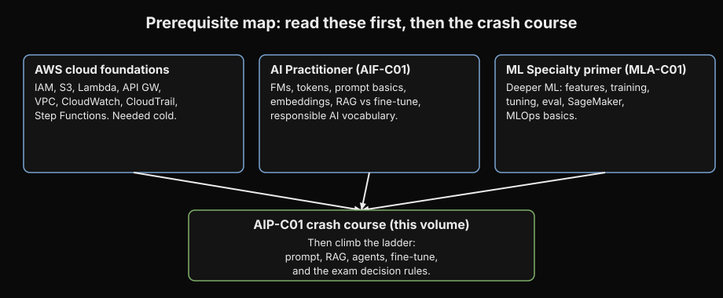
- Read each core slide. Explain its decision aloud.
- Reveal the answer after you attempt each recall prompt.
- Use the repository reference for weak topics and all source questions.
Intuition: AIP-C01 is a professional scenario exam testing whether you can build, secure, scale, and evaluate production GenAI systems on AWS, not just invoke an API.
API/Config:
Focus on AWS SDK (boto3: bedrock, bedrock-runtime, bedrock-agent, bedrock-agent-runtime) and AWS CLI bedrock commands....Exam Rule: Exam Rule: Always choose the solution that satisfies ALL stated constraints (security, latency, cost, residency), not just the newest feature.
Exam Trap: AWS states that its published guide is non-exhaustive. This course cannot guarantee every exam topic or a pass.
Exam facts and score
core-002 · Skills:
The official guide identifies 65 scored questions and 10 unscored questions. Unscored questions are not identified.
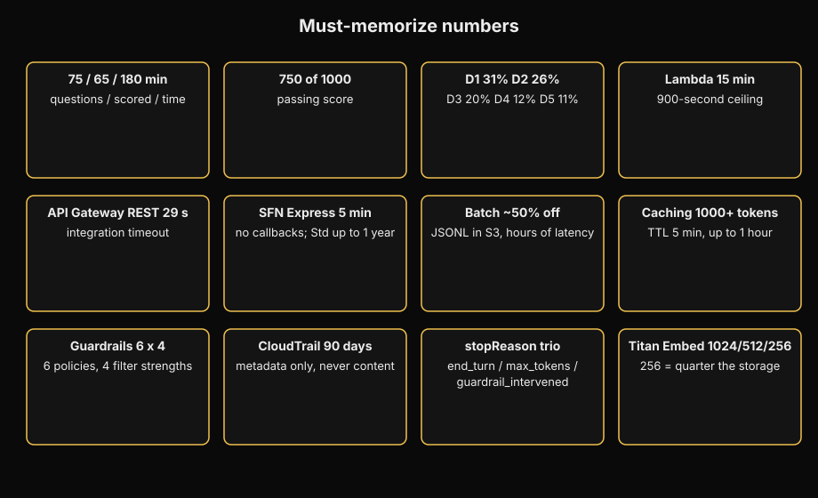
- Multiple choice has one correct answer and three distractors.
- Multiple response requires all correct options for credit.
- The score scale is 100 to 1,000. The minimum pass score is 750.
Intuition: The exam scoring follows a scaled 100-1000 model with 750 to pass. 65 questions are scored and 10 unscored questions are evaluated for future exams.
API/Config:
Key numbers: 75 total questions, 180 minutes (~2.4 minutes/question), 750 passing score, $300 fee....Exam Rule: Exam Rule: Multiple-response questions state exactly how many options to pick ('Select TWO' or 'Select THREE'). Partial credit is NOT given.
Exam Trap: A scaled score of 750 does not mean 75 percent correct. Domain question counts can vary.
Two-day route
core-003 · Skills:
This is a proposed study schedule. It assumes two full days and prior AWS application experience.
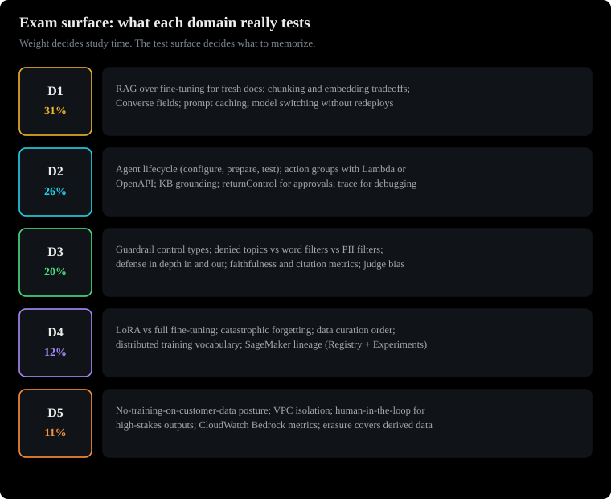
- Day 1: spend 2 hours on foundations and model APIs.
- Day 1: spend 4 hours on RAG, prompts, and agents.
- Day 2: spend 3 hours on security, operations, and evaluation.
Intuition: A 2-day study horizon requires prioritized high-yield domain coverage: 77% of the exam lies in Domains 1, 2, and 3.
API/Config:
Domain 1: 31%, Domain 2: 26%, Domain 3: 20%, Domain 4: 12%, Domain 5: 11%....Exam Rule: Exam Rule: Prioritize Bedrock Knowledge Bases, Bedrock Agents, Bedrock Guardrails, and Cross-Region Inference.
Exam Trap: These times are study allocations, not evidence of readiness. Use recall results to move time toward weak skills.
Scenario decisions
core-004 · Skills:
The credited option must satisfy every stated requirement at once.
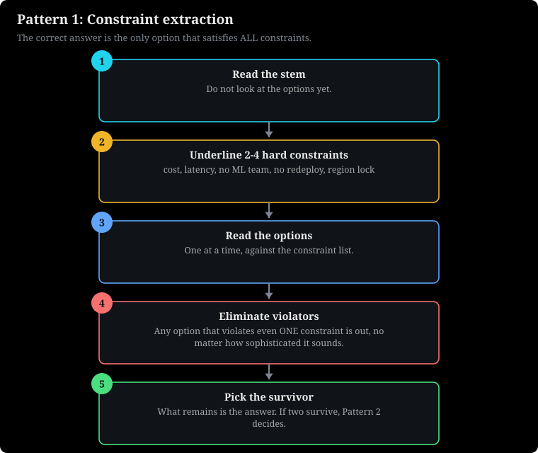
- Identify the outcome, data source, trust boundary, and failure mode.
- Mark hard limits for residency, response time, cost, and operations.
- Eliminate options that fail one hard requirement.
Intuition: Every question stem describes a specific enterprise persona, problem, and 2-4 hard constraints (budget, latency, security, regulatory).
API/Config:
Look for trigger phrases: 'least operational overhead' -> Managed Bedrock vs self-hosted EC2/EKS; 'lowest latency' -> Provisioned Throughput...Exam Rule: Exam Rule: The 'best' architecture on paper is wrong if it violates a stated operational or budget limit.
Exam Trap: A managed service is not automatically correct. A residency or control requirement can force another design.
Final decision rules
core-095 · Skills:
Use these rules as recall prompts after the full course.
- Fresh facts and citations require a controlled evidence path.
- Tool actions require server-side permission, validation, and retry safety.
- Optimization must preserve task quality and hard constraints.
Intuition: Master Decision Rules for AIP-C01: Instant heuristics to eliminate distractors and select credited answers within 30 seconds.
API/Config:
Review key quotas: 75 questions, 180 minutes, 750 pass, 29s API Gateway timeout, 5-minute prompt cache TTL, 1024 token cache minimum....Exam Rule: Exam Rule: Read the last sentence of the question first to identify the primary optimization target, then eliminate options that violate hard constraints.
Exam Trap: Treat repository rules such as always choose managed or always choose RAG as heuristics that require context.
Domain 1: Foundation Model Integration, Data Management & Compliance (31% of Exam)
Tokens, context, and inference
core-005 · Skills: 1.2.1, 4.1.1
Inference predicts output from input. A token is a model-specific unit, not a fixed number of words.
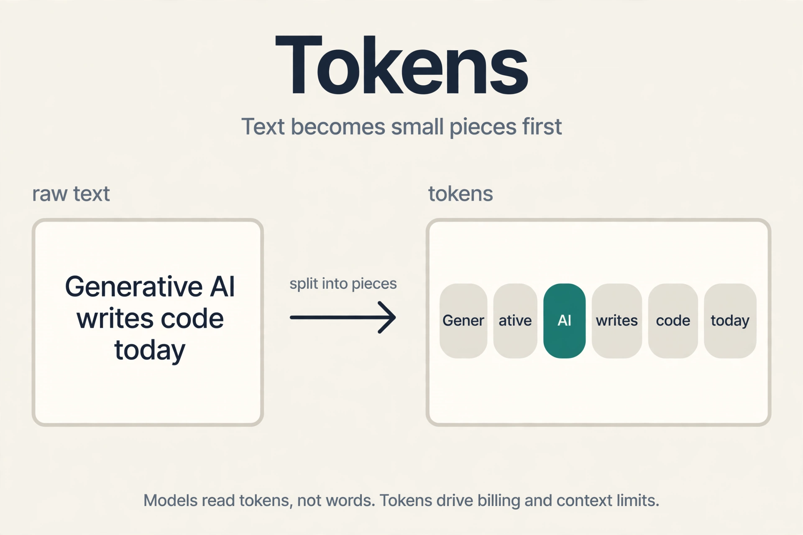
- The context budget includes instructions, conversation, retrieved data, tools, and output reserve.
- maxTokens limits generated output. It does not shorten input.
- Count tokens with a supported tokenizer or CountTokens API.
Intuition: Tokens are numerical representations of sub-word fragments (~0.75 words/token in English). Context window is a hard physical memory boundary.
API/Config:
bedrock_runtime.converse(..., inferenceConfig={'maxTokens': 2048, 'temperature': 0.1}). Check response['stopReason'] ('end_turn' vs 'max_tok...Exam Rule: Exam Rule: If a response is truncated mid-sentence or mid-JSON, check if stopReason == 'max_tokens' and increase maxTokens or prompt reserve.
Exam Trap: A larger context window does not guarantee that the model uses every fact well.
Prompt, RAG, tools, or customization
core-006 · Skills: 1.1.1
Select the smallest architecture that meets the task and its constraints.
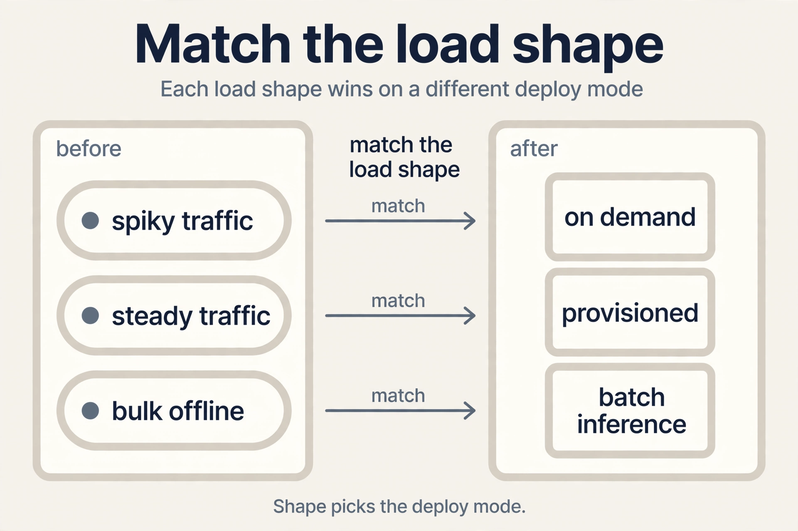
- Use prompts and examples for instructions, format, and task demonstrations.
- Use RAG for external facts, current documents, and evidence references.
- Use tools for current system state and authorized actions.
Intuition: The Solution Ladder: Start with Prompt Engineering -> RAG (dynamic facts) -> Fine-Tuning (style/format) -> Pre-training (new language/domain from scratch).
API/Config:
boto3.client('bedrock').create_model_customization_job(customizationType='FINE_TUNING'|'CONTINUED_PRE_TRAINING')....Exam Rule: Exam Rule: Dynamic changing knowledge -> RAG. Specialized tone, acronyms, or rigid formatting -> Fine-tuning (LoRA).
Exam Trap: Fine-tuning can encode knowledge, but it does not provide automatic freshness or reliable document citations.
Requirements and proof of concept
core-007 · Skills: 1.1.1, 1.1.2
A proof of concept must test a business task with representative data and measurable acceptance limits.
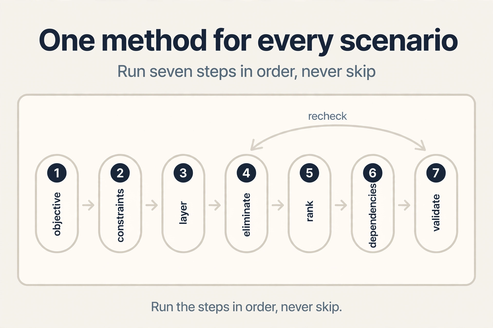
- Record accuracy, latency percentiles, cost per successful task, and safety requirements.
- Include long inputs, ambiguous requests, unavailable tools, and restricted documents.
- Compare a baseline prompt with RAG or tools when the task requires them.
Intuition: A proof of concept must be grounded in measurable acceptance criteria on representative domain data, not cherry-picked examples.
API/Config:
Amazon Bedrock Model Evaluation API: create_evaluation_job(evaluationJobName=..., roleArn=..., datasetMetricConfigs=...)....Exam Rule: Exam Rule: During exploration and PoC, always start with On-Demand serverless inference and prompt iteration.
Exam Trap: Do not purchase fixed capacity before the workload and quality threshold are clear.
Reusable architecture and the GenAI Lens
core-008 · Skills: 1.1.3
The Generative AI Lens applies architectural guidance to the GenAI lifecycle.
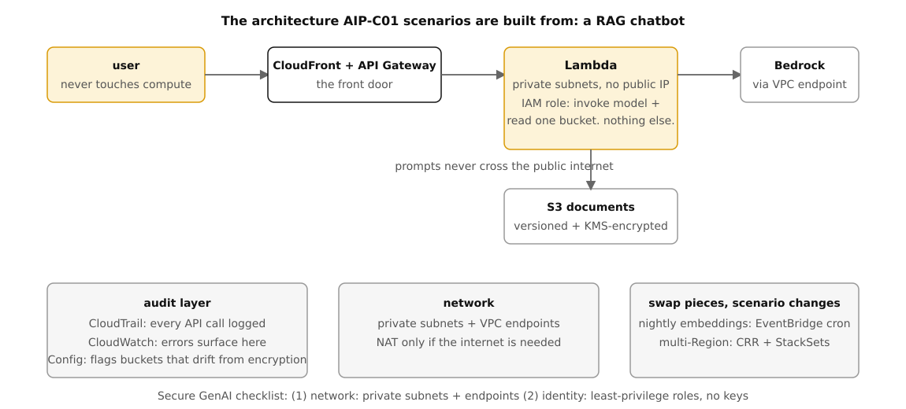
- Reuse a model gateway, prompt contract, evaluation harness, and telemetry schema.
- Define ownership across data, application, model, and platform layers.
- Review operational excellence, security, reliability, performance, cost, and sustainability.
Intuition: The AWS Well-Architected Framework Generative AI Lens defines 6 pillars tailored for LLM applications: Operational Excellence, Security, Reliability, Performance, Cost, Sustainability.
API/Config:
Key controls: Bedrock Guardrails for safety, AWS KMS for CMK encryption, Amazon CloudWatch for invocations, AWS CloudTrail for audit....Exam Rule: Exam Rule: Enterprise GenAI applications must enforce security and authorization at the backend gateway, never inside client prompt text.
Exam Trap: A framework review does not replace measurable tests or application authorization.
Model selection
core-009 · Skills: 1.2.1
Select a model from measured task performance and required features.
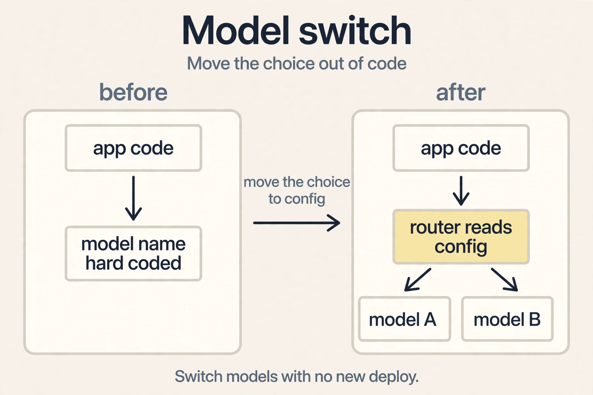
- Check modality, context, language, tool use, structured output, and regional availability.
- Benchmark factual quality and task completion on representative data.
- Compare time to first token, total time, throughput, and cost.
Intuition: Model selection balances task complexity, modality, context window size, latency (TTFT), and cost per 1,000 tokens.
API/Config:
List available models: bedrock.list_foundation_models(byInferenceType='ON_DEMAND', byOutputModality='TEXT')....Exam Rule: Exam Rule: Model selection criteria order: Task requirement & Modality -> Quality threshold -> Latency (TTFT) -> Cost per token.
Exam Trap: The largest model and the newest model are not universal answers.
Model access and authorization
core-010 · Skills: 1.2.1, 3.2.1
Model activation and IAM authorization are separate checks.
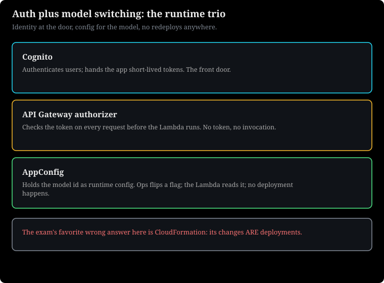
- Many models use default access with the required Marketplace permissions.
- Some providers or accounts require additional prerequisites.
- Check model availability in the selected Region and account.
Intuition: Accessing models requires two independent gates: 1) Activating model access in the Amazon Bedrock console, and 2) IAM permissions on the model ARN.
API/Config:
IAM Action: 'bedrock:InvokeModel', 'bedrock:InvokeModelWithResponseStream', Resource: 'arn:aws:bedrock:*::foundation-model/*'....Exam Rule: Exam Rule: An AccessDenied error when invoking Bedrock can mean EITHER missing IAM permissions OR model access not granted in Bedrock console/Marketplace.
Exam Trap: The repository claim that every model requires a manual access request is outdated. AccessDenied can reflect IAM policy failures.
Converse and InvokeModel
core-011 · Skills: 1.3.3, 2.4.1
Converse provides a common message interface for supported models. InvokeModel uses model-specific payloads.
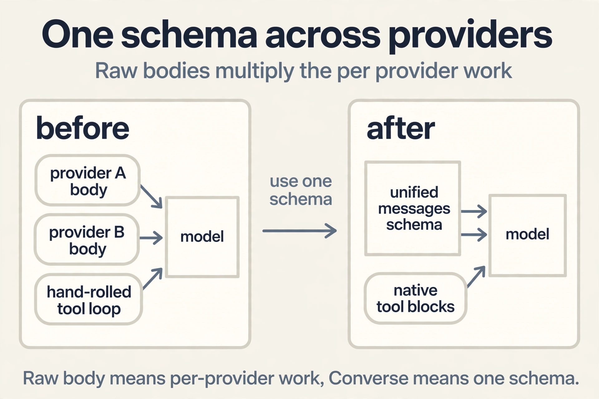
- Use Converse for supported conversation and tool-use workloads.
- Use InvokeModel for supported model-specific inference, such as embeddings.
- Use the runtime client for inference and the correct agent-runtime client for retrieval or agents.
Intuition: Converse API provides a unified, standardized interface across all Bedrock foundation models, eliminating provider-specific JSON schemas.
API/Config:
bedrock_runtime.converse(modelId='anthropic.claude-3-5-sonnet-...', messages=[{'role': 'user', 'content': [{'text': 'Hello'}]}], inferenceCo...Exam Rule: Exam Rule: When an application needs to switch foundation models easily without code rewrites, choose the Bedrock Converse API.
Exam Trap: One Converse interface does not imply identical capabilities across models.
Request and response contracts
core-012 · Skills: 1.3.3, 2.5.1
Treat each model request and response as a versioned interface.
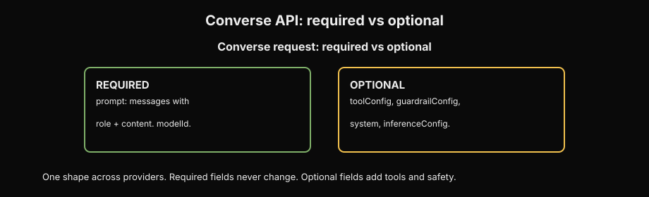
- Converse uses modelId, messages, optional system instructions, and inferenceConfig.
- Pass supported toolConfig, guardrailConfig, or outputConfig only when appropriate.
- Read content blocks, stopReason, usage, and metrics.
Intuition: Strict JSON validation and structured output guarantee downstream integration safety; LLM output must be treated as untrusted user input.
API/Config:
converse(..., toolConfig={'tools': [{'toolSpec': {'name': 'lookup', 'inputSchema': {'json': schema}}}]}). Check contentBlock['toolUse']....Exam Rule: Exam Rule: Tool use / function calling via Converse API toolConfig is the recommended way to extract reliable structured JSON.
Exam Trap: Valid JSON does not establish factual accuracy, authorization, or safe tool parameters.
Temperature, top-p, and top-k
core-013 · Skills: 1.2.1, 4.2.4
These controls affect token selection. They do not establish factual truth.
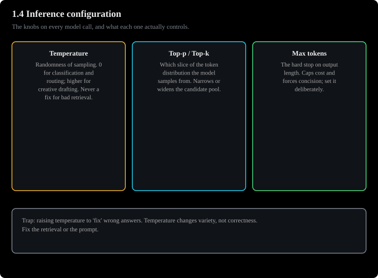
- Lower temperature generally reduces output variation.
- Top-p limits the candidate set by cumulative probability.
- Top-k limits the candidate set by count when the model supports it.
Intuition: Temperature and Top-P govern the randomness and sampling distribution of output tokens; they do NOT correct factual hallucinations.
API/Config:
inferenceConfig={'temperature': 0.0, 'topP': 0.9, 'maxTokens': 1024}. Note: When temperature is 0, topP is usually ignored....Exam Rule: Exam Rule: For factual, extraction, and code tasks, use temperature 0.0 to 0.2. For creative drafting, use 0.7 to 1.0. To fix factual errors, use RAG or Guardrails, not temperature.
Exam Trap: Temperature zero does not guarantee identical output across all systems or correct facts.
Configuration without a code release
core-014 · Skills: 1.2.2, 2.4.4
Separate model selection policy from provider-specific code.
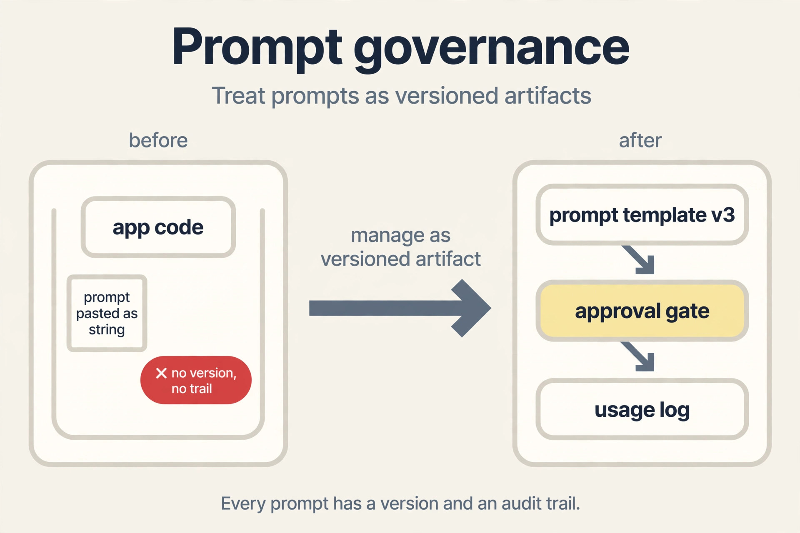
- Use AppConfig for validated model and prompt configuration.
- Route requests through an API and a stable internal model contract.
- Use capability checks before a fallback or provider change.
Intuition: Decoupling model selection, prompt templates, and guardrail settings from application code enables zero-downtime updates and rapid rollbacks.
API/Config:
bedrock_agent.get_prompt(promptIdentifier='prompt-id', promptVersion='1'). AWS AppConfig GetLatestConfiguration....Exam Rule: Exam Rule: Use Amazon Bedrock Prompt Management or AWS AppConfig to manage prompts and model configurations dynamically without application deployments.
Exam Trap: Changing the model ID alone can break tool schemas, token limits, safety settings, or response formats.
Cross-Region inference and resilience
core-015 · Skills: 1.2.3
Inference profiles can route supported model requests across eligible Regions.
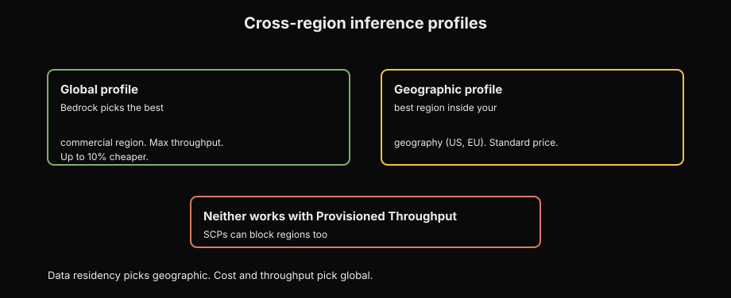
- Check the profile destination set against residency rules.
- Authorize the source and required destination model resources.
- Combine bounded retries with fallback and a circuit breaker.
Intuition: Cross-Region Inference automatically distributes inference requests across multiple AWS Regions to achieve higher throughput and avoid ThrottlingException.
API/Config:
bedrock_runtime.converse(modelId='us.anthropic.claude-3-5-sonnet-20240620-v1:0', ...). Prefix 'us.', 'eu.', or 'apac.' defines geographical ...Exam Rule: Exam Rule: To mitigate regional capacity constraints and eliminate 429 ThrottlingException spikes at no extra cost, use Bedrock Cross-Region Inference Profiles.
Exam Trap: Cross-Region inference does not mean unrestricted global failover. A geography profile and a global profile have different boundaries.
Customization choices
core-016 · Skills: 1.2.4
Customization changes model behavior or knowledge through an additional process.
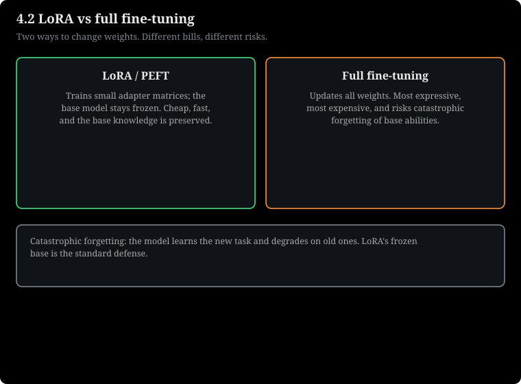
- Fine-tuning uses task examples and target outputs.
- Continued pre-training uses domain data where the model and service support it.
- Distillation transfers behavior from a teacher to a smaller student where supported.
Intuition: Model customization alters model weights via Fine-Tuning (labeled prompt-response pairs) or Continued Pre-Training (unlabeled domain text).
API/Config:
bedrock.create_model_customization_job(jobName='ft-job', customModelName='domain-v1', baseModelIdentifier='...', trainingDataConfig={'s3Uri'...Exam Rule: Exam Rule: Custom models in Bedrock require Provisioned Throughput to serve. Always check if RAG or few-shot prompting can solve the task before fine-tuning.
Exam Trap: Customization does not remove the need for retrieval, evaluation, or security controls.
Customized model lifecycle
core-017 · Skills: 1.2.4, 2.3.5
Treat a custom model as a versioned production dependency.
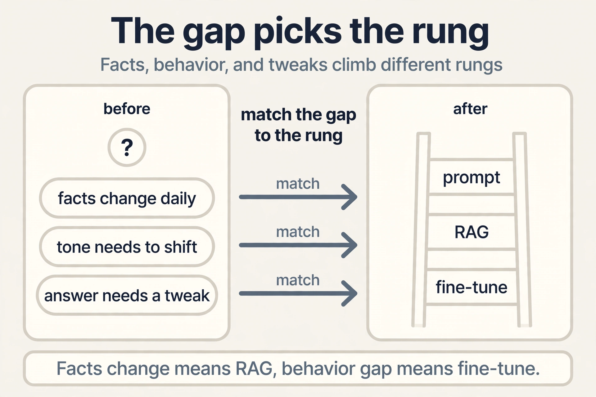
- Register model versions, input data versions, metrics, and approval status.
- Use SageMaker Model Registry for governed SageMaker deployment workflows.
- Test candidates with a canary and a rollback target.
Intuition: Customized models must follow rigorous MLOps lifecycles: data versioning, validation split, evaluation benchmarks, canary deployment, and rollback strategy.
API/Config:
Amazon Bedrock: list_custom_models(), get_custom_model(). AWS KMS key policy must grant Bedrock service principal access to training data....Exam Rule: Exam Rule: Custom model training requires S3 bucket permissions and an IAM service role trusted by bedrock.amazonaws.com with kms:Decrypt permissions.
Exam Trap: A successful training job does not prove safe or cost-effective production behavior.
Data quality before inference
core-018 · Skills: 1.3.1, 1.3.4
Bad source data becomes bad retrieval and bad answers.
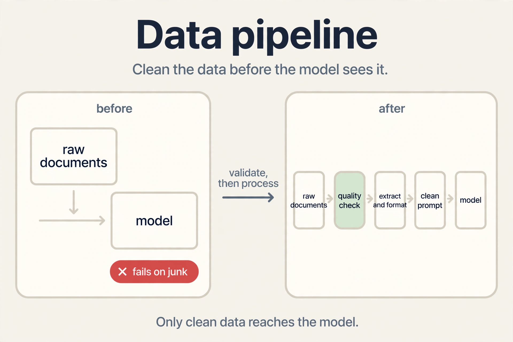
- Check completeness, schema, duplicates, encoding, freshness, and document ownership.
- Use Glue Data Quality for rules and quality metrics.
- Use Lambda or SageMaker Processing for normalization and validation.
Intuition: Garbage in, garbage out: RAG retrieval quality is bounded by document cleansing, deduplication, formatting, and structural integrity.
API/Config:
AWS Glue Data Quality rulesets, Amazon Comprehend for language and PII pre-screening....Exam Rule: Exam Rule: High-accuracy enterprise RAG requires clean source data preparation and metadata enrichment before vector ingestion.
Exam Trap: An LLM can reformat text but can also alter facts. Verify extracted values against the source.
Multimodal data preparation
core-019 · Skills: 1.3.2, 2.5.3
Each modality needs a suitable extraction and validation path.
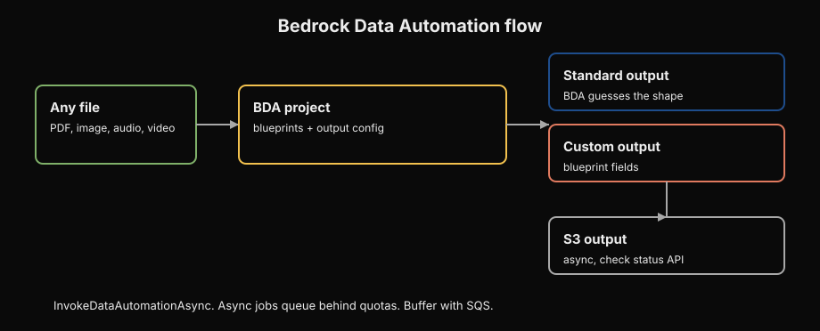
- Use Textract for document text, forms, and tables where appropriate.
- Use Transcribe for audio transcripts and Comprehend for entity or PII analysis.
- Use Bedrock Data Automation for supported multimodal extraction workflows.
Intuition: Multimodal RAG extracts and unifies information across text, tables, charts, images, and audio into rich embeddings or structured representations.
API/Config:
textract.analyze_document(FeatureTypes=['TABLES', 'FORMS']). bedrock-runtime.invoke_model(modelId='amazon.titan-embed-image-v1')....Exam Rule: Exam Rule: For document workflows with financial tables, invoices, and forms, use Amazon Textract or Amazon Bedrock Data Automation.
Exam Trap: OCR text can lose table relationships. An image-capable model does not automatically solve every layout error.
Vector search from first principles
core-020 · Skills: 1.4.1
An embedding maps content into a vector space. A vector index retrieves nearby representations.
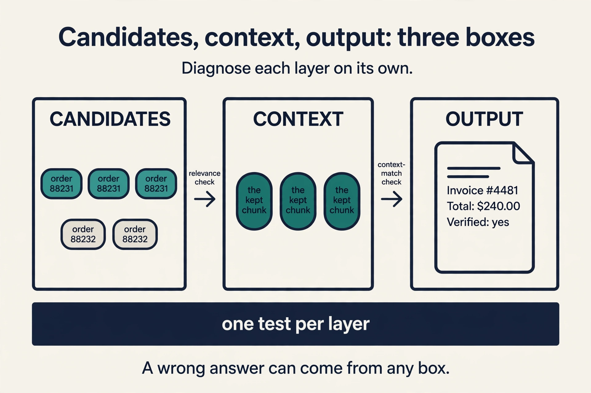
- Embed the document chunks and query with compatible model settings.
- Store source ID, text reference, version, and access metadata beside each vector.
- Use similarity search for conceptual matches.
Intuition: Vector embeddings map semantic meaning into high-dimensional geometric space; cosine similarity measures directional alignment between query and chunks.
API/Config:
Similarity Metrics: Cosine Similarity (direction-only), Dot Product (requires normalized vectors), Euclidean Distance (L2 norm)....Exam Rule: Exam Rule: If you change the embedding model, you MUST re-index and re-embed all documents in the vector store from scratch.
Exam Trap: Embedding similarity is not a probability that a passage or answer is true.
Vector store selection
core-021 · Skills: 1.4.1, 1.5.3
Select a store from retrieval, scale, transaction, and operational requirements.
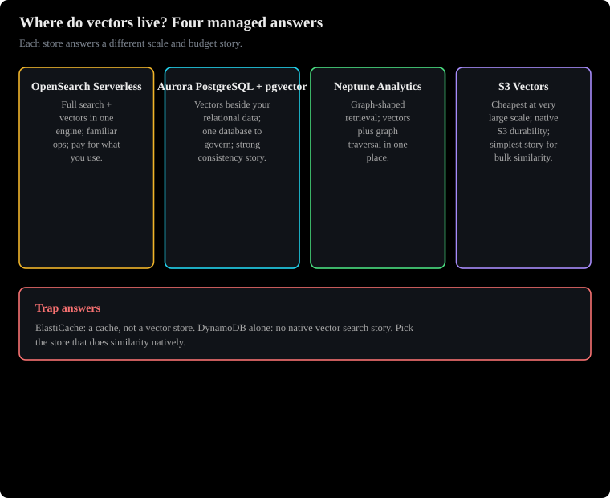
- OpenSearch supports search-focused architectures with vectors and lexical retrieval.
- Aurora PostgreSQL with pgvector can combine relational data and vector queries.
- Knowledge Bases supports a defined set of vector store integrations.
Intuition: Choose vector stores based on operational overhead, scale, hybrid search support, and existing AWS infrastructure footprint.
API/Config:
Knowledge Base storage configuration: storageConfiguration={'type': 'OPENSEARCH_SERVERLESS' | 'RDS' | 'PINECONE' | 'NEPTUNE'}....Exam Rule: Exam Rule: Default managed vector store for Bedrock Knowledge Bases is OpenSearch Serverless (AOSS). If existing relational workloads exist, use Aurora PostgreSQL pgvector.
Exam Trap: DynamoDB metadata storage does not automatically make DynamoDB a substitute for a supported vector index.
Metadata and authorized retrieval
core-022 · Skills: 1.4.2, 3.2.1
Metadata gives each retrieved passage context and access boundaries.
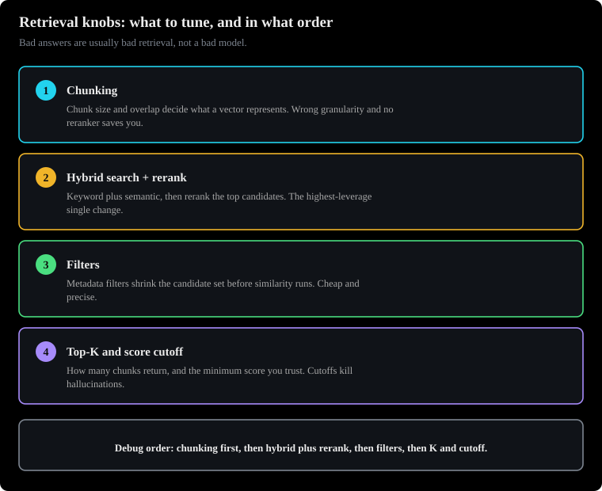
- Store tenant, document ID, version, effective date, language, and classification.
- Derive tenant filters from authenticated identity on the server.
- Apply access filters before evidence reaches the model.
Intuition: Metadata filtering enforces multi-tenant security and pre-filters search spaces by tenant ID, department, date, or document classification.
API/Config:
bedrock_agent_runtime.retrieve(knowledgeBaseId=..., retrievalQuery={'text': '...'}, retrievalConfiguration={'vectorSearchConfiguration': {'f...Exam Rule: Exam Rule: Multi-tenant document isolation and access control MUST be enforced via Vector Store Metadata Filters in the retrieval query, not prompt instructions.
Exam Trap: A prompt instruction such as use only my tenant cannot replace authorization.
Vector scale and integration
core-023 · Skills: 1.4.3, 1.4.4
Index layout and connector behavior affect relevance, isolation, and latency.
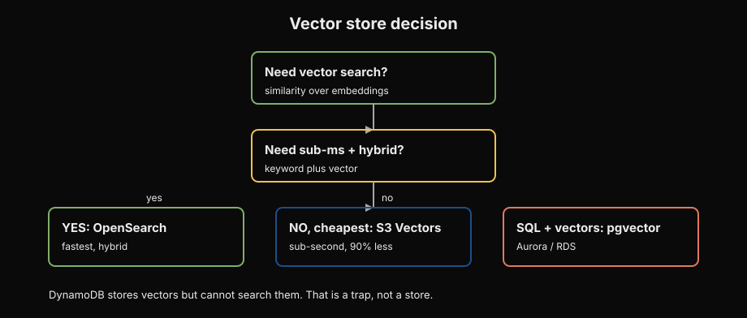
- Partition by domain or tenant when the access and scale model requires it.
- Balance shards and replicas against query and update traffic.
- Use connectors, APIs, AppFlow, or custom extraction for enterprise sources.
Intuition: Scaling vector databases requires balancing indexing throughput, query latency, OpenSearch Compute Units (OCUs), and memory footprint.
API/Config:
AOSS capacity limits: OpenSearch Serverless minimum baseline is 4 OCUs (2 search + 2 indexing for HA). Maximum limit can be configured via A...Exam Rule: Exam Rule: OpenSearch Serverless automatically scales compute units (OCUs) for search and ingestion independently, with built-in AZ redundancy.
Exam Trap: More shards can increase overhead. Tune from representative load tests.
Fresh vectors and document deletion
core-024 · Skills: 1.4.5
A source edit does not help answers until retrieval sees the current version.
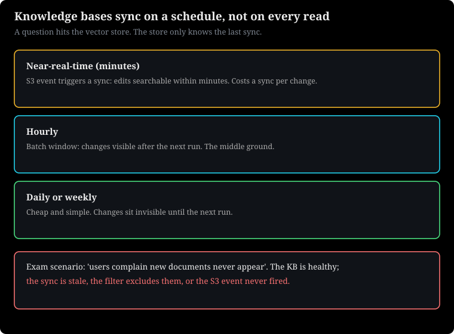
- Use version-aware incremental sync and change detection.
- Retry failed ingestion with idempotent document identifiers.
- Remove stale vectors and cached responses after source deletion or permission change.
Intuition: Synchronizing Knowledge Bases detects new, updated, and deleted source files in S3 and reconciles vector index embeddings incrementally.
API/Config:
bedrock_agent.start_ingestion_job(knowledgeBaseId='kb-id', dataSourceId='ds-id'). Status: STARTING -> IN_PROGRESS -> COMPLETE / FAILED....Exam Rule: Exam Rule: Updates or deletions in S3 do not take effect in Bedrock Knowledge Bases until a DataSource Ingestion Job is executed.
Exam Trap: A successful source upload is not proof of successful indexing.
Chunking choices
core-025 · Skills: 1.5.1
Chunk size trades focused retrieval against complete context.
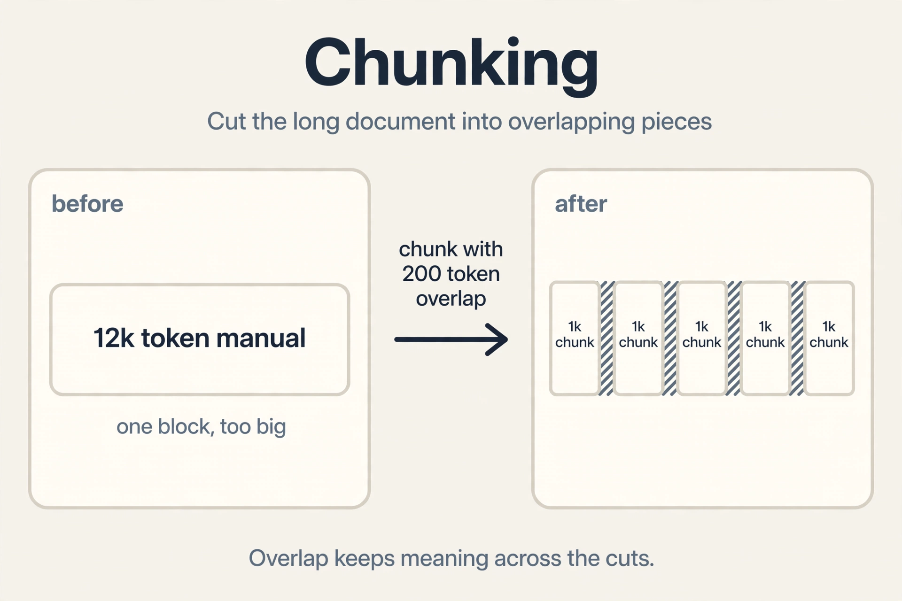
- Fixed-size chunks use a token limit and overlap.
- Semantic chunks follow meaning changes and add processing cost.
- Hierarchical chunks retrieve children and return broader parent context.
Intuition: Chunking determines retrieval granularity: small chunks preserve specific facts, while large chunks provide broad narrative context.
API/Config:
Knowledge Base chunking configuration: chunkingStrategy='FIXED_SIZE' | 'HIERARCHICAL' | 'SEMANTIC' | 'NONE'....Exam Rule: Exam Rule: When retrieval requires pinpoint precision but the LLM needs wide surrounding context to answer accurately, choose Hierarchical (Parent-Child) Chunking.
Exam Trap: Hierarchy can return fewer results than requested after parent replacement. More chunks are not always more evidence.
Embedding selection and migration
core-026 · Skills: 1.5.2
An embedding model defines the space in which similarity has meaning.
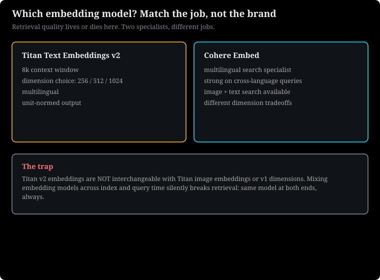
- Compare domain fit, language, dimensions, input length, latency, and storage cost.
- Use the same compatible configuration for document and query vectors.
- Batch embedding jobs where the pipeline permits it.
Intuition: Embedding models convert text into dense semantic vectors; dimension size (e.g. 1024 vs 512 vs 256) trades off memory storage for fine-grained accuracy.
API/Config:
invoke_model(modelId='amazon.titan-embed-text-v2:0', body=json.dumps({'inputText': '...', 'dimensions': 512, 'normalize': True}))....Exam Rule: Exam Rule: Amazon Titan Text Embeddings v2 supports reduced dimensions (512 or 256) to lower vector store storage costs by up to 75% with minimal accuracy loss.
Exam Trap: Equal dimensions do not imply compatible vector spaces.
Hybrid retrieval and reranking
core-027 · Skills: 1.5.4
A search stage finds candidates. A reranker scores the candidates for the query.
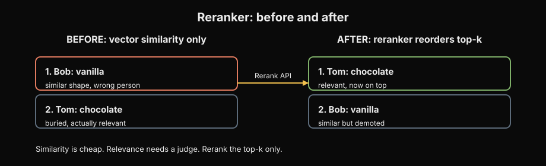
- Vector search matches meaning. Lexical search matches exact terms.
- Hybrid search combines both signals where the integration supports it.
- Retrieve a candidate set and rerank before prompt construction.
Intuition: Hybrid search merges Lexical Search (BM25 keyword match for exact IDs/acronyms) and Semantic Vector Search, followed by Re-ranking.
API/Config:
Bedrock Knowledge Base retrievalConfiguration: vectorSearchConfiguration={'overrideSearchType': 'HYBRID'} + rerankingConfiguration={'type': ...Exam Rule: Exam Rule: For technical documentation with part numbers, error codes, and exact acronyms, always choose HYBRID search (lexical + semantic) with re-ranking.
Exam Trap: A reranker cannot recover a relevant passage that the candidate stage never returns.
Query transformation and decomposition
core-028 · Skills: 1.5.5
A user question can require several retrieval operations.
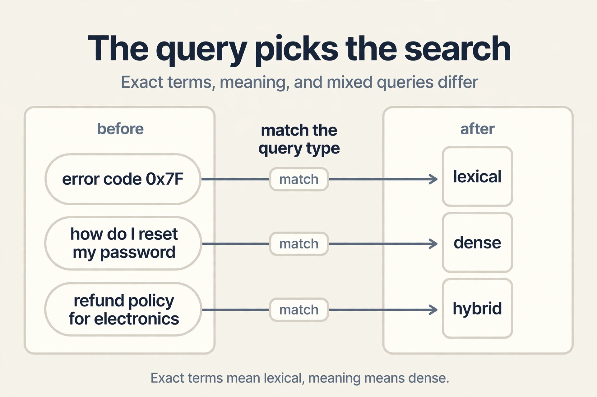
- Rewrite unclear queries without changing their meaning.
- Expand terms when domain synonyms matter.
- Decompose multi-part questions into evidence requests.
Intuition: Raw user queries are often ambiguous, multi-part, or referential; query transformation rewrites, decomposes, or expands queries before retrieval.
API/Config:
Bedrock Knowledge Base automatically performs query reformulation in RetrieveAndGenerate multi-turn sessions....Exam Rule: Exam Rule: Use Query Reformulation / Query Decomposition when handling multi-turn conversational RAG or complex compound queries.
Exam Trap: Uncontrolled expansion can add irrelevant evidence or broaden data access.
Retrieval APIs and tool contracts
core-029 · Skills: 1.5.6
A stable retrieval contract separates evidence access from answer generation.
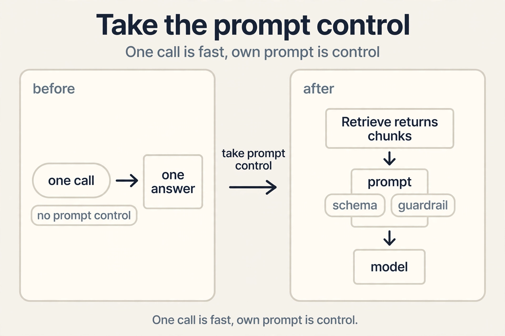
- Retrieve returns evidence for custom generation workflows.
- RetrieveAndGenerate combines managed retrieval and generation with source references.
- A function or MCP interface can expose controlled search to an agent.
Intuition: Bedrock provides two primary RAG APIs: Retrieve (returns raw chunks only) vs RetrieveAndGenerate (handles retrieval + model synthesis end-to-end).
API/Config:
bedrock-agent-runtime.retrieve(knowledgeBaseId=..., retrievalQuery=...) vs bedrock-agent-runtime.retrieve_and_generate(input={'text': '...'}...Exam Rule: Exam Rule: Choose Retrieve if you need raw passages, custom prompt templates, or client-side control. Choose RetrieveAndGenerate for fully managed RAG with automatic citations.
Exam Trap: Converse does not automatically query a Knowledge Base. Connect retrieval through application logic or a supported managed workflow.
Prompt structure and instruction boundaries
core-030 · Skills: 1.6.1, 1.6.5
A prompt states the task, constraints, evidence, and required output.
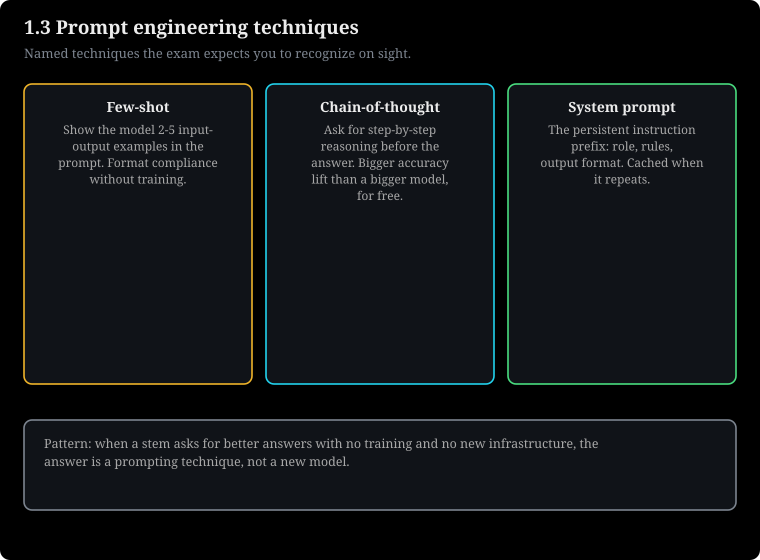
- Place stable behavior in system instructions where the model supports them.
- Separate user content and retrieved evidence from trusted instructions.
- Use examples for the exact task and output format.
Intuition: Prompt engineering structures instructions, roles, context, constraints, and few-shot examples using clear XML delimiters to prevent instruction leakage.
API/Config:
Converse API: pass system instructions in `system=[{'text': '...'}]`, user messages in `messages=[{'role': 'user', 'content': [{'text': '......Exam Rule: Exam Rule: Anthropic Claude and modern models on Bedrock perform best with clear XML tags (``, ``, ``) delineating prompt sections.
Exam Trap: Instruction hierarchy helps model behavior but does not create a security boundary.
Conversation state and clarification
core-031 · Skills: 1.6.2
Conversation history is application data with a token budget and an access scope.
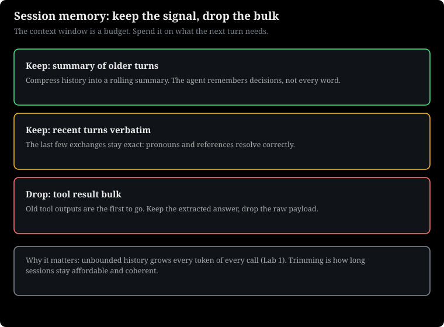
- Persist session records with authenticated ownership, such as in DynamoDB.
- Summarize or prune history under tested rules.
- Ask for missing required fields before a tool action.
Intuition: Multi-turn chatbots require managing conversational history within context token limits, pruning or summarizing older turns to prevent context exhaustion.
API/Config:
Amazon DynamoDB stores conversation history by `session_id`; Bedrock Agent manages session state automatically via `sessionId` parameter....Exam Rule: Exam Rule: Store multi-turn conversation history in Amazon DynamoDB; apply sliding window or rolling summarization to bound context token consumption.
Exam Trap: Bedrock inference calls do not replace application session control. A summary can lose important constraints.
Prompt management and regression
core-032 · Skills: 1.6.3, 1.6.4
Prompts require version control, release control, and tests.
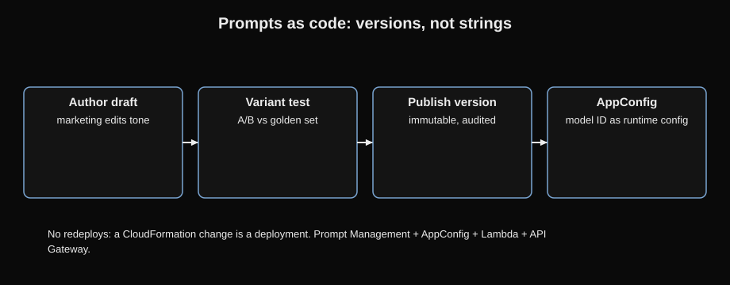
- Use Prompt Management for reusable prompt resources and versions.
- Store test datasets, parameter values, and evaluation results with the prompt version.
- Use CI/CD or orchestration for approval steps and policy gates.
Intuition: Amazon Bedrock Prompt Management provides versioned, testable, and reusable prompt assets with dynamic template variables.
API/Config:
bedrock-agent.create_prompt(name='CustomerSupport', variants=[{'name': 'v1', 'modelId': '...', 'templateType': 'TEXT', 'templateConfiguratio...Exam Rule: Exam Rule: Production workloads using Bedrock Prompt Management must target immutable numbered versions (e.g. version '2'), never the mutable DRAFT.
Exam Trap: A prompt resource does not establish a complete organizational approval workflow by itself.
Flows and complex prompt systems
core-033 · Skills: 1.6.6, 2.5.2, 2.5.5
Bedrock Flows connects supported workflow nodes in an explicit process.
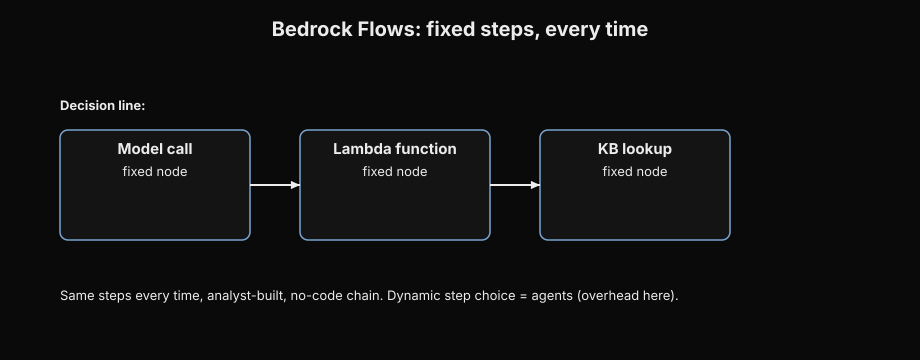
- Use sequential nodes for fixed prompt and retrieval stages.
- Use conditions for branches with clear business rules.
- Use reusable components and validated input-output contracts.
Intuition: Amazon Bedrock Flows visually orchestrates complex multi-step generative AI workflows with branching logic, parallel execution, and data transformation.
API/Config:
bedrock-agent.create_flow(), prepare_flow(), invoke_flow(). Flows emit events over an SSE response stream....Exam Rule: Exam Rule: Use Amazon Bedrock Flows to visually design, test, and run multi-step prompt workflows with conditional branching and knowledge base lookups.
Exam Trap: A fixed workflow and an autonomous agent solve different control problems.
End-to-end secure RAG case
core-093 · Skills: 1.1.1, 2.3.5, 3.2.1, 5.1.5
A policy assistant needs current evidence, tenant isolation, citations, and an auditable response path.
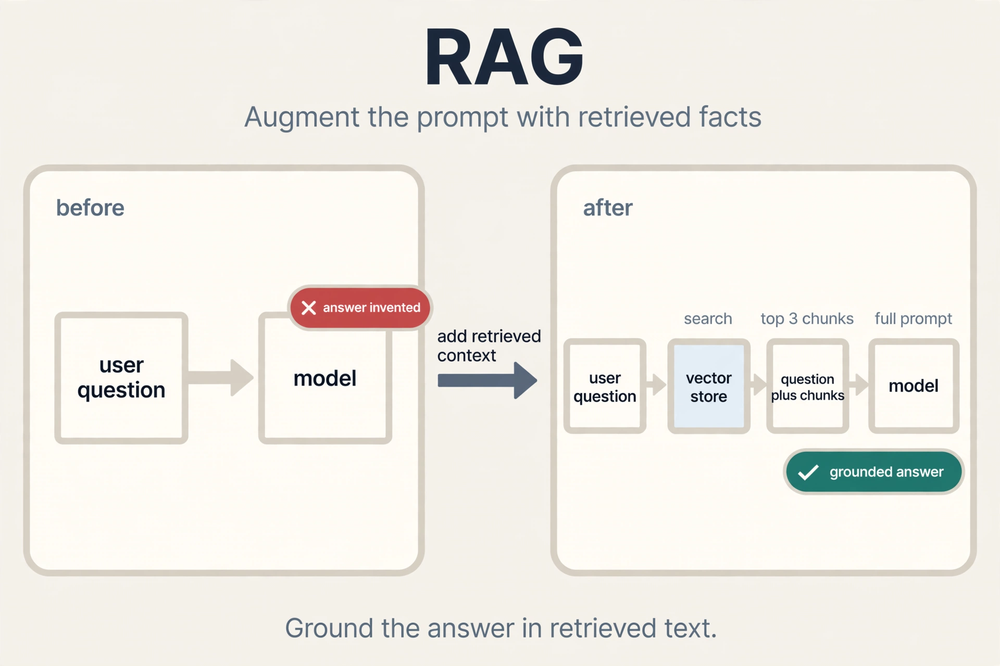
- Authenticate the user and derive the permitted data scope.
- Retrieve current authorized passages and rerank when justified.
- Construct a bounded prompt and apply the required safety controls.
Intuition: End-to-End Enterprise Secure RAG Architecture: Fully private, multi-tenant, encrypted, grounded, and observable knowledge retrieval.
API/Config:
Key components: S3 DataSource + KMS CMK + AOSS + Bedrock Knowledge Base + Contextual Grounding Guardrail + Model Invocation Logging....Exam Rule: Exam Rule: The reference secure RAG architecture combines VPC Endpoints, KMS CMKs, Metadata tenant filtering, Guardrails Contextual Grounding, and Invocation Logging.
Exam Trap: Citations, encryption, and Guardrails do not replace tenant authorization.
Domain 2: Implementation and Integration (26% of Exam)
Agent loop and state
core-034 · Skills: 2.1.1, 2.1.2
An agent uses model output to choose a tool, observe its result, and continue toward a goal.
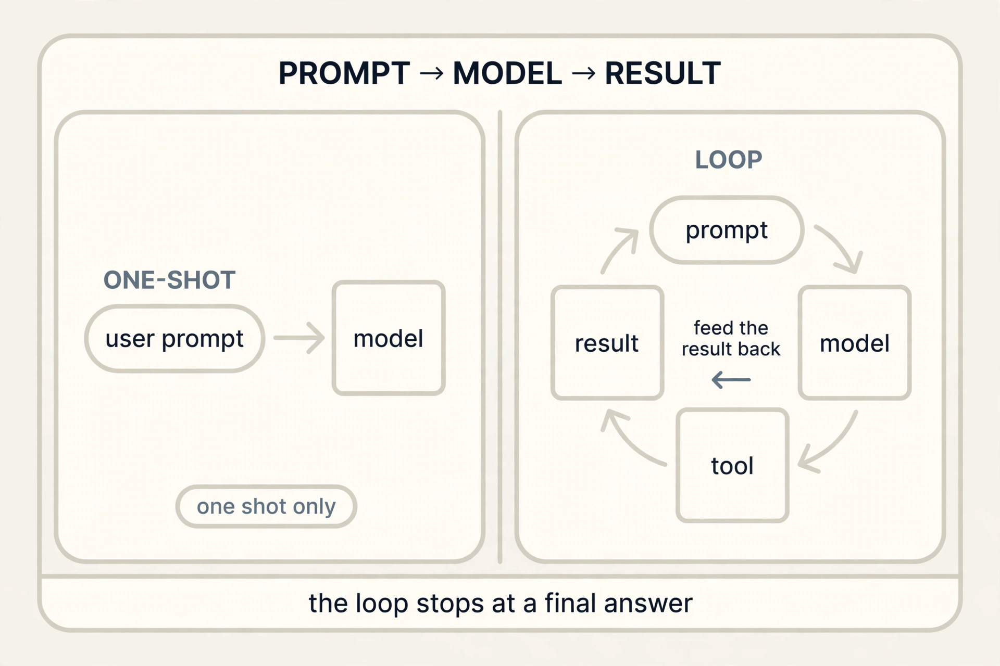
- Maintain task state, conversation state, and durable memory separately.
- Use ReAct-style cycles for action and observation.
- Persist tool results with correlation IDs and the responsible identity.
Intuition: Agents use the ReAct (Reasoning + Acting) loop: the foundation model analyzes the goal, determines if a tool/retrieval is needed, observes the result, and iterates until done.
API/Config:
bedrock-agent.create_agent(agentName=..., foundationModel=..., instruction=...). Invoke: bedrock-agent-runtime.invoke_agent(agentId=..., age...Exam Rule: Exam Rule: After creating or editing a Bedrock Agent, you MUST call `PrepareAgent` (or click Prepare in console) before invocations will reflect the changes.
Exam Trap: A model proposal is not an authorized action. The tool service must enforce permission and input validity.
Strands, Agent Squad, and managed agents
core-035 · Skills: 2.1.1, 2.5.5
Distinguish agent development frameworks from managed service components.
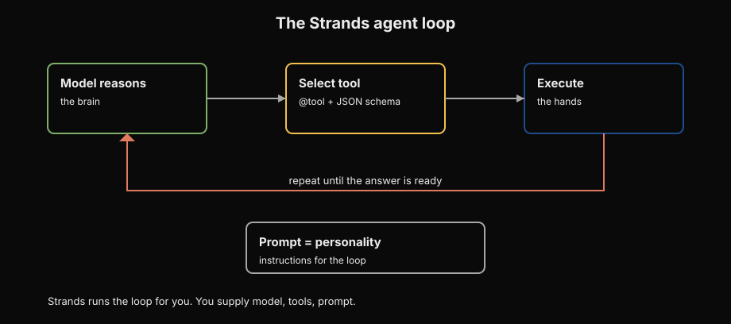
- Strands provides an SDK for model-driven agent loops and tools.
- Agent Squad supports coordination across agents and routing patterns.
- Bedrock Agents provides managed orchestration with supported tools and knowledge sources.
Intuition: Agents can be built using Amazon Bedrock managed agents or open-source multi-agent frameworks (e.g. LangGraph, CrewAI, Autogen) hosted on AWS.
API/Config:
Bedrock Agent Components: Foundation Model + Instructions + Action Groups + Knowledge Bases + Guardrails + Memory (session state)....Exam Rule: Exam Rule: When the requirement specifies 'least operational effort' for an interactive agent with tools and knowledge bases, choose Amazon Bedrock Agents.
Exam Trap: The framework name does not prove that memory, authorization, or evaluation is automatic.
Bounded agent execution
core-036 · Skills: 2.1.3
Agent reliability needs explicit stopping rules and resource limits.
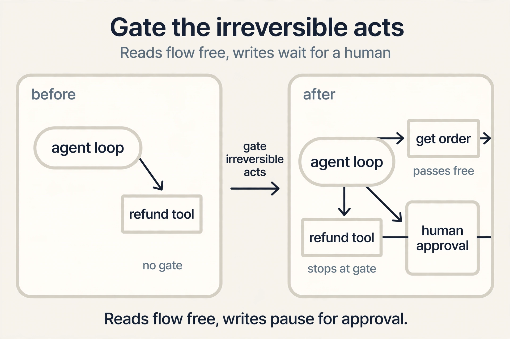
- Set a maximum step count, elapsed time, token budget, and tool budget.
- Use timeouts and circuit breakers around unreliable tools.
- Limit role permissions to approved resources and actions.
Intuition: Autonomous agents risk infinite loops, run-away API costs, and tool thrashing; execution must be strictly bounded with loop limits and timeouts.
API/Config:
Bedrock Agent sessionState: pass sessionAttributes and promptSessionAttributes to control execution limits and propagate context across turn...Exam Rule: Exam Rule: Bounded agent execution requires maximum loop iteration limits, tool timeout handling, and session state monitoring.
Exam Trap: A system prompt that says do not loop cannot replace an enforced step limit.
Multi-agent coordination
core-037 · Skills: 2.1.4
Specialized agents can divide work when their interfaces and authority remain clear.
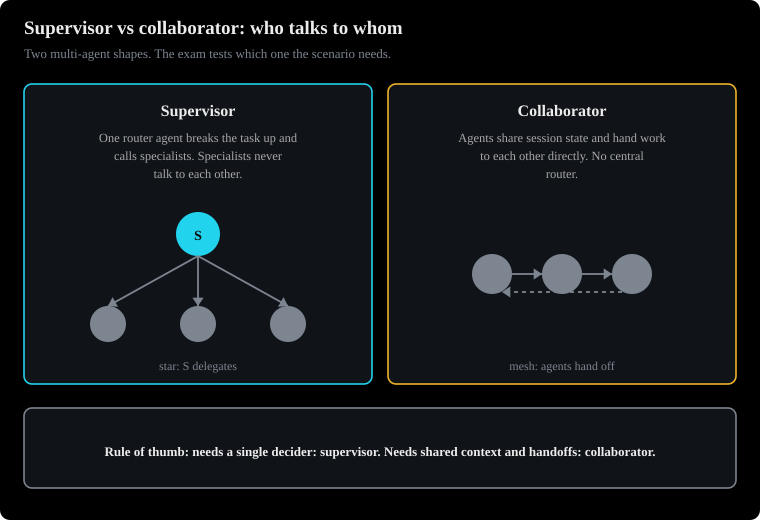
- Use a supervisor for routing and result synthesis where that pattern fits.
- Use specialized models or agents for distinct capabilities.
- Validate collaborator outputs against a shared task contract.
Intuition: Multi-agent systems divide complex domains into specialized sub-agents (e.g. Billing Agent, Technical Agent) coordinated by a Supervisor Agent.
API/Config:
Bedrock Multi-Agent Collaboration: Supervisor agent delegates to sub-agents registered as collaborators. Sub-agents execute independent inst...Exam Rule: Exam Rule: When an application requires dozens of tools across different domains, decompose into specialized sub-agents with a routing supervisor.
Exam Trap: More agents add latency and failure paths. A single workflow can be better for a fixed process.
Human review and approvals
core-038 · Skills: 2.1.5
Human review controls consequential actions and unresolved uncertainty.
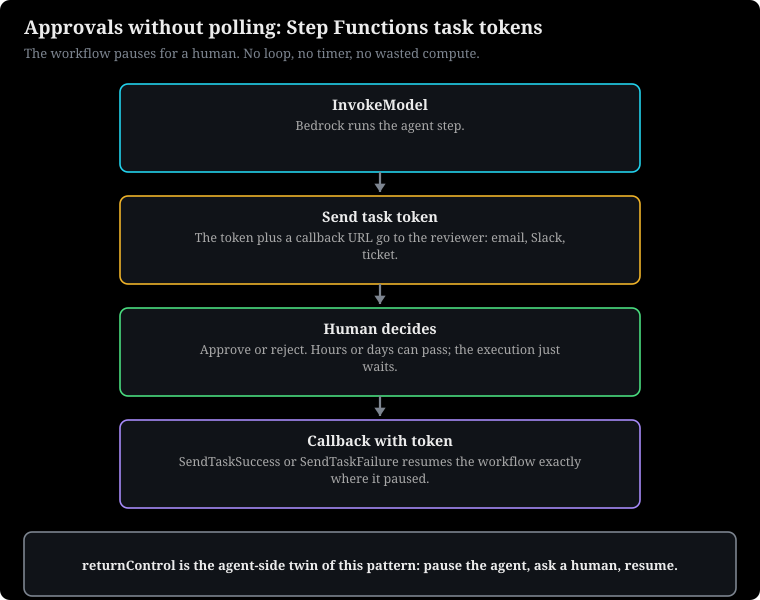
- Pause the workflow before the side effect.
- Show the exact proposed action, evidence, and relevant limits.
- Bind approval to the actor, action, parameters, and expiry.
Intuition: High-impact actions (wire transfers, deleting resources, placing orders) require Human-in-the-Loop (HITL) approval before execution.
API/Config:
Bedrock Agent Action Group: `customControlMethod='RETURN_OF_CONTROL'` (agent pauses and returns toolUse to client instead of calling Lambda ...Exam Rule: Exam Rule: For sensitive or regulated tool execution, use Return of Control (`RETURN_OF_CONTROL`) or AWS Step Functions task tokens to pause for human approval.
Exam Trap: Approval of a general goal does not validate changed parameters or a different transaction.
Tool schemas and reliable side effects
core-039 · Skills: 2.1.6
A tool definition describes an interface. The implementation controls its behavior.
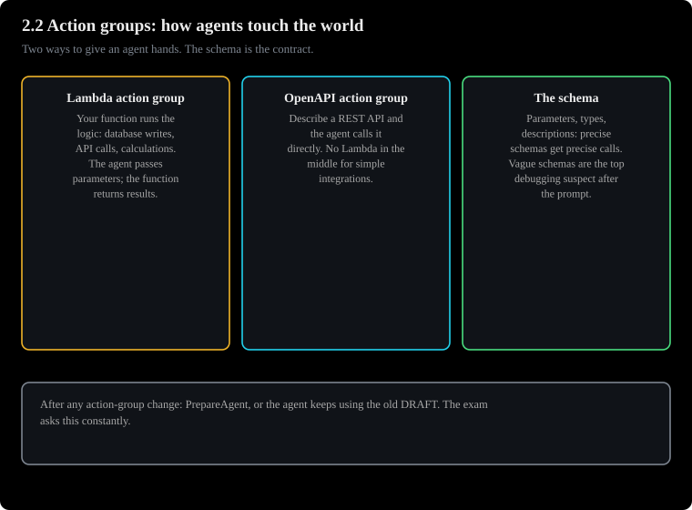
- Define names, parameter types, required fields, and response types precisely.
- Validate input, authorization, and business rules on the server.
- Use idempotency for retryable write operations.
Intuition: Action Groups connect agents to external business systems via OpenAPI 3.0 schemas, mapping model intent into validated REST parameters.
API/Config:
bedrock-agent.create_agent_action_group(actionGroupName=..., apiSchema={'s3': {'s3BucketName': '...', 's3ObjectKey': 'openapi.json'}}, actio...Exam Rule: Exam Rule: Action Group Lambda execution requires an OpenAPI 3.0 schema and a Lambda resource policy permitting `bedrock.amazonaws.com` with source ARN condition.
Exam Trap: A timeout does not prove that a side effect failed. A blind retry can duplicate the action.
MCP client and server
core-040 · Skills: 2.1.7, 1.5.6
MCP standardizes how a client discovers and uses server capabilities.
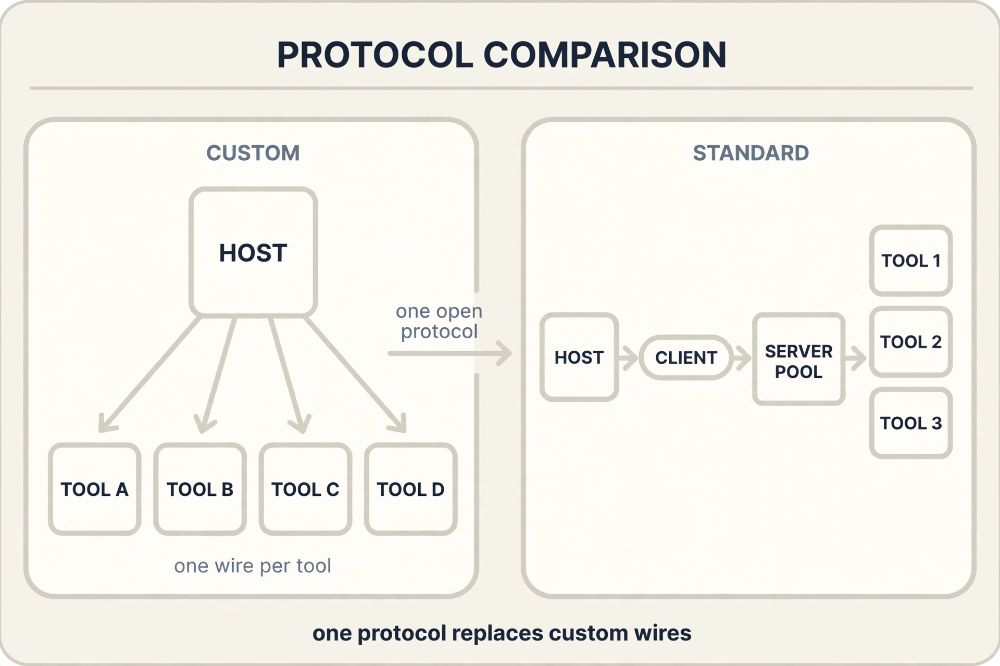
- Expose narrow tools with explicit schemas and least privilege.
- Use Lambda for suitable lightweight stateless integrations.
- Use containers when long-lived or complex tool services require them.
Intuition: Model Context Protocol (MCP) is an open standard that decouples LLM applications from tool/data integrations via client-server architecture.
API/Config:
MCP Primitives: Prompts (reusable templates), Resources (context/documents), Tools (executable functions with JSON schemas)....Exam Rule: Exam Rule: Model Context Protocol (MCP) uses JSON-RPC to standardize how generative AI agents discover and execute tools and access resources.
Exam Trap: MCP is an interface protocol. It does not make every tool safe or every result trustworthy.
AgentCore component boundaries
core-041 · Skills: 2.1.1, 2.1.7
Select AgentCore components by the responsibility each one supplies.
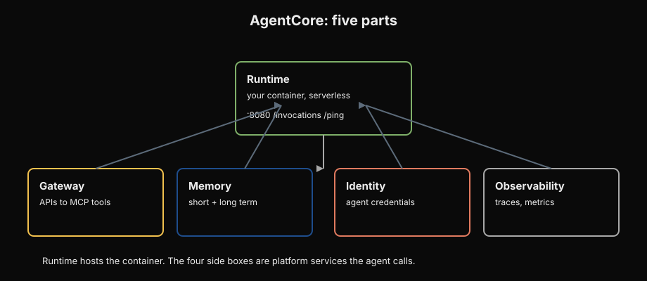
- Runtime executes agents and tools in supported environments.
- Gateway exposes supported tools through managed access interfaces.
- Memory manages supported state and memory use cases.
Intuition: AgentCore component boundaries isolate Orchestration (ReAct reasoning), Working Memory (short-term session), Long-Term Memory (vector/RAG), and Tools.
API/Config:
Separate IAM execution roles for Agent (bedrock.amazonaws.com), Lambda tools, and Knowledge Base vector access....Exam Rule: Exam Rule: Maintain clear isolation between Agent Orchestration, Ephemeral Session Memory (DynamoDB), and Enterprise Knowledge Bases (OpenSearch).
Exam Trap: A managed runtime does not remove application-specific authorization or evaluation duties.
Deployment modes
core-042 · Skills: 2.2.1
Match deployment to traffic, model support, control requirements, and operational effort.
- Use Bedrock on-demand inference for supported variable workloads.
- Assess Provisioned Throughput for supported models and capacity requirements.
- Use SageMaker endpoints when supported custom hosting and runtime control matter.
Intuition: Deployment modes balance control vs management: Fully Managed Serverless (Bedrock), Curated Managed Hosting (SageMaker JumpStart), Self-Managed (EKS/EC2).
API/Config:
SageMaker: sagemaker.create_model(), create_endpoint_config(), create_endpoint(). Bedrock: invoke_model() directly....Exam Rule: Exam Rule: 'Zero infrastructure management and pay-per-token' -> Bedrock. 'Custom HuggingFace container, full VPC isolation, dedicated GPU control' -> SageMaker.
Exam Trap: Lambda can invoke a model. It is not the host for a large GPU model.
LLM hosting mechanics
core-043 · Skills: 2.2.2
Large models can face memory and token throughput limits that differ from small predictive models.
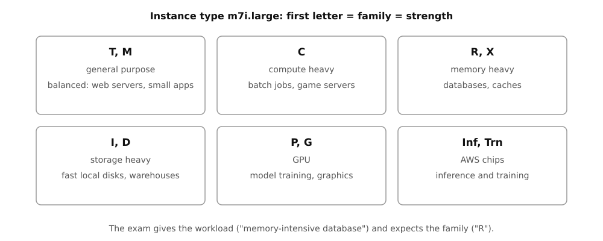
- Plan for model weights, runtime overhead, KV cache, and concurrent requests.
- Assess quantization, model parallelism, and supported inference containers.
- Measure cold start, model load time, and warm capacity.
Intuition: Self-hosting LLMs on AWS requires understanding GPU instance families, VRAM memory footprints, quantization, and serving engines (vLLM, TGI).
API/Config:
AWS Neuron SDK for compiling and serving models on Inferentia2 (inf2) and Trainium (trn1) for high-throughput, cost-effective inference....Exam Rule: Exam Rule: For low-cost, high-throughput custom model hosting on AWS silicon, use AWS Inferentia2 (Inf2) instances with AWS Neuron SDK.
Exam Trap: A GPU with enough memory for weights can still lack memory for the target concurrency.
Small models and cascades
core-044 · Skills: 2.2.3, 4.1.2
A cascade uses a lower-cost path for suitable tasks and escalates when the task requires more capability.
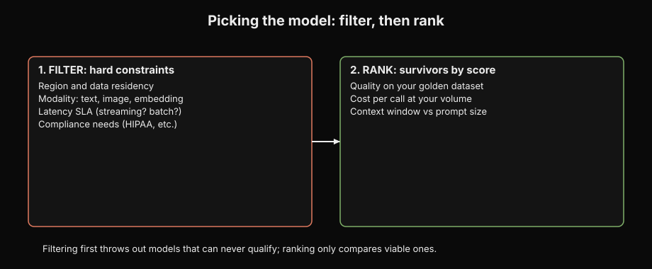
- Route with validated task classes, rules, or calibrated evaluation signals.
- Use a smaller model only when it meets the required quality floor.
- Include routing and escalation costs in the comparison.
Intuition: Model routing cascades route incoming requests to the cheapest and fastest model capable of solving the task, escalating only when needed.
API/Config:
Gateway routing logic evaluates query classification confidence score. If confidence > 0.85 -> small model, else -> large model....Exam Rule: Exam Rule: Implement a Model Cascade / Router to optimize cost and latency: evaluate with lightweight models first, escalate complex tasks to frontier models.
Exam Trap: A model saying I am confident is not a calibrated probability of correctness.
Enterprise events and APIs
core-045 · Skills: 2.3.1, 2.3.2
Integration style follows the response contract and failure behavior.
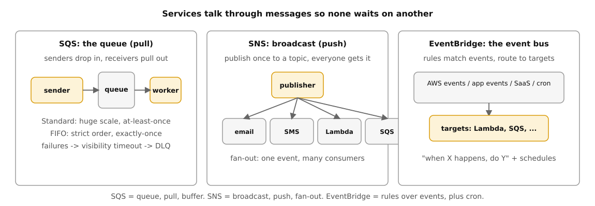
- Use synchronous APIs when callers need an immediate result.
- Use SQS for buffered work and backpressure.
- Use EventBridge for event routing across decoupled systems.
Intuition: Event-driven GenAI architectures decouple real-time user experiences from long-running inference jobs using Amazon EventBridge and SQS.
API/Config:
boto3.client('sqs').send_message(), boto3.client('events').put_events(). API Gateway WebSocket API for push updates....Exam Rule: Exam Rule: API Gateway has a 29-second maximum integration timeout. For agent tasks exceeding 29s, use asynchronous processing with SQS/Step Functions and WebSockets.
Exam Trap: An event bus routes events. It does not replace every queue or durable workflow.
Federation and secure enterprise access
core-046 · Skills: 2.3.3
User identity and service identity serve different purposes.
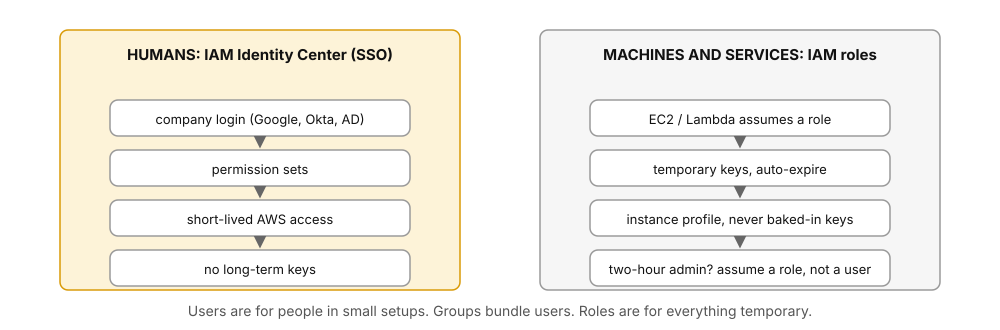
- Use federation or Cognito for supported user authentication.
- Use execution roles and temporary credentials for AWS service calls.
- Propagate trusted tenant and role context through the gateway.
Intuition: Enterprise federation connects corporate identity providers (Okta, Azure AD, Ping) to AWS using IAM Identity Center and OIDC/SAML 2.0.
API/Config:
AWS STS AssumeRole, IAM Session Tags (`aws:PrincipalTag/Department`) for attribute-based access control (ABAC) to Bedrock resources....Exam Rule: Exam Rule: Enterprise user authentication to GenAI applications must use IAM Identity Center with SAML/OIDC federation and temporary STS credentials.
Exam Trap: An authenticated user can still lack permission for a particular document or action.
Hybrid, edge, and residency
core-047 · Skills: 2.3.4
Data location and model execution location are separate architectural facts.
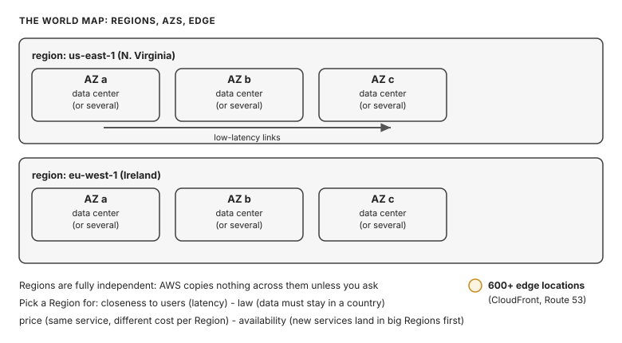
- Use approved connectivity between cloud and on-premises systems.
- Assess Outposts for supported on-premises AWS workloads.
- Assess Wavelength for supported edge latency requirements.
Intuition: Data residency and sovereignty regulations (GDPR, HIPAA, country-specific laws) dictate where data and model inference can physically execute.
API/Config:
Ensure modelId uses regional identifier (`anthropic.claude...`), NOT cross-region profile (`us.` or `global.`) if strict residency is enforc...Exam Rule: Exam Rule: When compliance requires strict in-country data residency, use single-region Bedrock endpoints or geographically restricted inference profiles.
Exam Trap: Outposts and Wavelength do not imply that every Bedrock foundation model runs locally.
GenAI gateway and CI/CD
core-048 · Skills: 2.3.5
A gateway centralizes policy while CI/CD controls release quality.
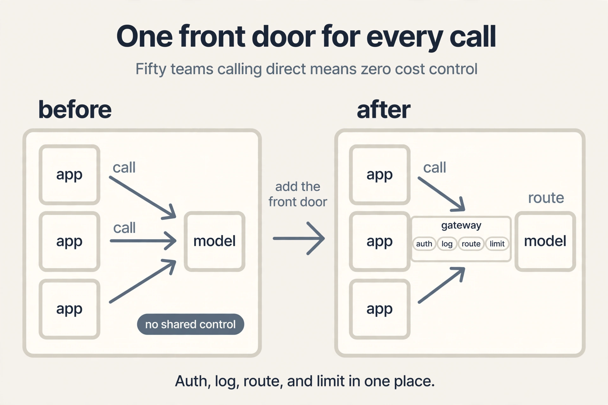
- Apply request validation, identity checks, budgets, and model routing at the gateway.
- Trace requests across retrieval, generation, and tool calls.
- Use CodeBuild and CodePipeline for tests, scans, and release gates.
Intuition: A Generative AI Gateway centralizes rate limiting, authentication, telemetry, cost tracking, and model switching behind a unified corporate facade.
API/Config:
API Gateway Usage Plans and API Keys for consumer quota management; CloudWatch EMF (Embedded Metric Format) for token usage tracking....Exam Rule: Exam Rule: A Generative AI Gateway pattern provides centralized governance, rate-limiting, authentication, cost allocation, and safety enforcement.
Exam Trap: Central routing without per-user data authorization can concentrate a security defect.
Synchronous, asynchronous, and batch calls
core-049 · Skills: 2.4.1
These patterns differ in caller behavior and service support.

- Synchronous inference keeps the caller attached to one result.
- Application-level async uses a queue, worker, and status record.
- Service async operations exist only for supported models and tasks.
Intuition: Choose invocation patterns based on SLA: Synchronous for instant chat, Asynchronous/Streaming for interactive UI, Batch for bulk offline processing.
API/Config:
bedrock.create_model_invocation_job(jobName=..., roleArn=..., modelId=..., inputDataConfig={'s3InputDataConfig': {'s3Uri': 's3://.../batch.j...Exam Rule: Exam Rule: For non-real-time bulk workloads (e.g. nightly document analysis), use Amazon Bedrock Batch Inference for a 50% cost reduction.
Exam Trap: An application queue does not turn every model into a service-native asynchronous model.
Streaming from model to client
core-050 · Skills: 2.4.2, 2.5.1
Streaming can improve time to first token while the full response still takes time.
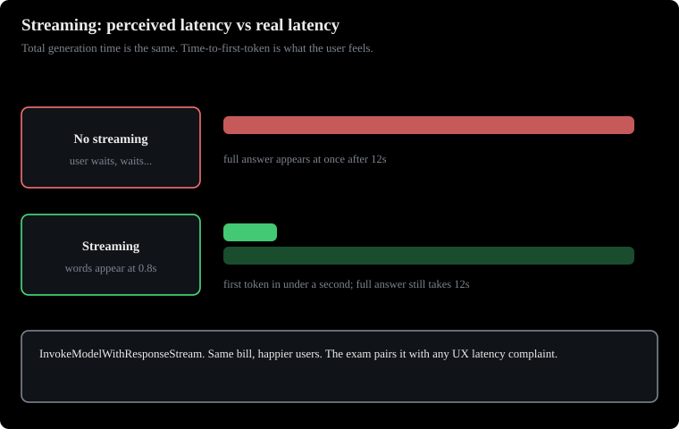
- Use ConverseStream or InvokeModelWithResponseStream where supported.
- Preserve streaming through every intermediary and client.
- Distinguish partial text from a completed, validated response.
Intuition: Response streaming reduces perceived latency (Time to First Token - TTFT) from seconds to milliseconds by streaming token chunks via Server-Sent Events (SSE).
API/Config:
bedrock_runtime.converse_stream(modelId=..., messages=...). Iterate: `for event in response['stream']: if 'contentBlockDelta' in event: prin...Exam Rule: Exam Rule: Use `converse_stream` or `invoke_model_with_response_stream` with HTTP Server-Sent Events (SSE) to achieve minimum Time to First Token (TTFT).
Exam Trap: Streaming does not automatically reduce total token work or prevent unsafe partial content.
Retries, backpressure, and circuit breakers
core-051 · Skills: 2.4.3
Retry only when the failure class and remaining request budget permit it.

- Use exponential backoff with jitter for appropriate transient errors.
- Bound retry count and total elapsed time.
- Queue excess work and cap concurrent invocations.
Intuition: Handling 429 ThrottlingException and transient errors requires exponential backoff with full jitter to avoid the 'thundering herd' problem.
API/Config:
botocore.config.Config(retries={'max_attempts': 10, 'mode': 'adaptive'}). Full Jitter algorithm: `sleep = random.uniform(0, min(cap, base * ...Exam Rule: Exam Rule: Handle Bedrock ThrottlingException using Exponential Backoff with FULL JITTER or enable the AWS SDK 'adaptive' retry mode.
Exam Trap: Immediate retries amplify throttling. Retries cannot fix a malformed request or missing permission.
Routing policy and fallback quality
core-052 · Skills: 2.4.4
Routing needs both an availability policy and a capability policy.
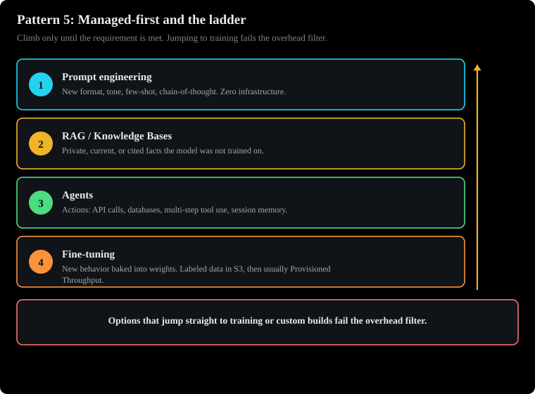
- Use static routes for known task classes.
- Use dynamic routing when measured signals justify its overhead.
- Preserve residency and authorization constraints on every route.
Intuition: Routing policies switch to fallback models or degraded modes when a primary model experiences an outage or capacity exhaustion.
API/Config:
Try/Except block catching `ClientError`: if e.response['Error']['Code'] == 'ThrottlingException': invoke fallback model....Exam Rule: Exam Rule: Resilient production architectures must define automated fallback models and verify token limit compatibility before routing.
Exam Trap: A fallback that returns an invalid business result is not a successful recovery.
Application interfaces and workflow tools
core-053 · Skills: 2.5.2, 2.5.3
A useful AI interface exposes task progress, uncertainty, and the next permitted action.
- Use Amplify for suitable application interface development.
- Use OpenAPI contracts for stable client integration.
- Use Flows for supported visual workflow authoring.
Intuition: Developer tooling and interfaces like AWS SDK, AWS CDK, Bedrock Playground, and LangChain accelerate prototyping and deployment.
API/Config:
AWS CDK TypeScript / Python: `new bedrock.CfnGuardrail(this, 'MyGuardrail', { name: 'ProdGuardrail', ... })`....Exam Rule: Exam Rule: Use AWS CDK or CloudFormation to version, replicate, and deploy Amazon Bedrock infrastructure across dev, staging, and prod environments.
Exam Trap: A polished chat interface cannot compensate for an incorrect evidence or authorization path.
Developer tools and diagnosis
core-054 · Skills: 2.5.4, 2.5.6
Amazon Q Developer can assist development. The engineer remains responsible for correctness and security.
- Use assistance for code, refactoring, API examples, and error analysis.
- Validate generated code against current API contracts.
- Use Logs Insights for correlated application evidence.
Intuition: Diagnosing developer issues requires systematic isolation: verify IAM identity -> check model activation in Region -> validate request payload syntax -> inspect CloudWatch logs.
API/Config:
boto3 error handling: `except ClientError as e: print(e.response['Error']['Code'], e.response['Error']['Message'])`....Exam Rule: Exam Rule: Diagnostic sequence: Check Bedrock Console Model Access -> Check IAM policy -> Validate JSON payload -> Check CloudWatch / CloudTrail logs.
Exam Trap: Generated code can use old SDKs or invent fields. Verify execution and permissions.
End-to-end action agent case
core-094 · Skills: 2.1.3, 2.1.5, 2.1.6, 5.1.7
A refund agent must inspect policy and order state before it proposes a controlled transaction.
- Retrieve the current refund policy and authorized order state.
- Validate amount, customer scope, and policy conditions.
- Obtain required approval for the exact refund.
Intuition: End-to-End Action Agent Architecture: Autonomous, tool-enabled, secure, and observable agentic workflow with human-in-the-loop safeguards.
API/Config:
boto3: create_agent, create_agent_action_group, associate_agent_knowledge_base, prepare_agent, invoke_agent....Exam Rule: Exam Rule: Production Bedrock Agent deployment requires creating an Agent Alias pointing to a prepared snapshot version.
Exam Trap: A fluent explanation of the refund does not authorize the transaction.
Domain 3: AI Safety, Security, and Governance (20% of Exam)
Input safety and prompt attacks
core-055 · Skills: 3.1.1, 3.1.5
Treat user content, documents, tool responses, and external pages as potentially adversarial.
- Use supported Guardrails content and prompt-attack controls.
- Separate trusted instructions from untrusted evidence.
- Sanitize and validate data at ingestion and tool boundaries.
Intuition: Direct prompt injection (jailbreak) attempts to override system instructions; indirect prompt injection hides malicious instructions inside external data (websites, emails).
API/Config:
Bedrock Guardrails: `contentPolicyConfig={'filtersConfig': [{'type': 'PROMPT_ATTACK', 'inputStrength': 'HIGH', 'outputStrength': 'NONE'}]}`....Exam Rule: Exam Rule: To defend against direct and indirect prompt injection attacks, configure Amazon Bedrock Guardrails with Prompt Attack Filter set to HIGH.
Exam Trap: Keyword filters alone miss indirect and transformed attacks.
Guardrails policy selection
core-056 · Skills: 3.1.1, 3.1.2
Match the policy to the exact harm or business restriction.
- Use content filters for supported harmful content categories.
- Use denied topics for defined prohibited subjects.
- Use word filters for specific words or phrases.
Intuition: Amazon Bedrock Guardrails provides 6 safety policies: Denied Topics, Content Filters, Sensitive Information (PII), Word Filters, Contextual Grounding, Automated Reasoning.
API/Config:
bedrock.create_guardrail(name=..., topicPolicyConfig=..., contentPolicyConfig=..., wordPolicyConfig=..., sensitiveInformationPolicyConfig=.....Exam Rule: Exam Rule: Amazon Bedrock Guardrails can be applied to Bedrock models, Bedrock Agents, Knowledge Bases, AND external models via the standalone `ApplyGuardrail` API.
Exam Trap: A denied topic and a word filter are not interchangeable. A business topic can use many different words.
Guardrails placement and output safety
core-057 · Skills: 3.1.2, 3.1.4
Protect the input, retrieved context, tool path, and final output with suitable controls.
- Apply Guardrails through supported inference integrations or ApplyGuardrail.
- Validate output structure and business rules after generation.
- Filter or mask sensitive outputs where policy requires it.
Intuition: Guardrails evaluate both input prompts and generated output independently; content filters detect Hate, Insults, Sexual, Violence, Misconduct, and Prompt Attack.
API/Config:
Content filter strengths: NONE, LOW, MEDIUM, HIGH. Configured independently for input and output....Exam Rule: Exam Rule: Guardrails filter strengths (LOW, MEDIUM, HIGH) can and should be tuned independently for user inputs versus model outputs.
Exam Trap: One content check does not enforce retrieval permissions, tool authorization, or SQL safety.
Grounding, relevance, and hallucination
core-058 · Skills: 3.1.3
Grounding asks whether the answer follows supplied evidence. Relevance asks whether it addresses the question.
- Use current authorized sources and preserve citations.
- Evaluate support for each factual claim.
- Use supported contextual grounding checks when appropriate.
Intuition: Contextual Grounding Check detects hallucinations in RAG applications by evaluating Grounding (factual support in reference docs) and Relevance (addressing user query).
API/Config:
contextualGroundingPolicyConfig={'filtersConfig': [{'type': 'GROUNDING', 'threshold': 0.85}, {'type': 'RELEVANCE', 'threshold': 0.80}]}....Exam Rule: Exam Rule: To prevent hallucinations in RAG and verify that model outputs are grounded in retrieved source documents, configure Contextual Grounding Check.
Exam Trap: A citation can be real while its passage does not support the claim. JSON Schema cannot establish factual truth.
Automated Reasoning checks
core-059 · Skills: 3.1.3, 3.4.3
Automated Reasoning checks assess responses against a formal policy within supported use cases.
- Translate policy material into a validated formal representation.
- Check the response against policy rules and stated facts.
- Inspect findings and route unsupported or ambiguous cases appropriately.
Intuition: Automated Reasoning checks use mathematical formal methods and logic solvers to verify critical business rules without relying on probabilistic LLM judgment.
API/Config:
Used in mission-critical compliance and security policies where 99.9% statistical accuracy is unacceptable and mathematical certainty is req...Exam Rule: Exam Rule: When zero tolerance for compliance violation is required, choose Automated Reasoning over probabilistic LLM evaluators.
Exam Trap: Formal policy consistency is not a universal guarantee of truth outside the policy model.
Private network and IAM controls
core-060 · Skills: 3.2.1
PrivateLink controls network access paths. IAM controls permitted actions and resources.
- Create the appropriate interface endpoints for runtime and other required APIs.
- Configure endpoint security groups, private DNS, and endpoint policy.
- Use scoped execution roles and temporary credentials.
Intuition: Enterprise security mandates that GenAI traffic never traverses the public internet; use AWS PrivateLink VPC Endpoints with IAM endpoint policies.
API/Config:
VPC Endpoint Policy: enforce `Condition: {'StringEquals': {'aws:PrincipalArn': 'arn:aws:iam::account:role/AppRole'}}`. IAM Policy: `Conditio...Exam Rule: Exam Rule: To restrict Bedrock access strictly to private subnets without internet access, create an Interface VPC Endpoint (PrivateLink) and use `aws:sourceVpce` condition key.
Exam Trap: A VPC endpoint does not grant IAM permission or prove that the application never uses another public path.
Encryption and secrets
core-061 · Skills: 3.2.1, 3.2.2
Protect data in transit, stored content, indexes, logs, backups, and secrets.
- Use TLS for service traffic.
- Use supported KMS encryption controls for stored data.
- Restrict key use and inspect both IAM and key policy.
Intuition: Data protection requires envelope encryption: data at rest is encrypted with Customer Managed Keys (CMK) in AWS KMS; data in transit uses TLS 1.3.
API/Config:
KMS Key Policy MUST grant Bedrock service principal: `Principal: {'Service': 'bedrock.amazonaws.com'}, Action: ['kms:Decrypt', 'kms:Generate...Exam Rule: Exam Rule: Custom encryption at rest for Bedrock resources (Knowledge Bases, Custom Models, Invocation Logs) requires an AWS KMS Customer Managed Key (CMK) with appropriate key policy.
Exam Trap: Encryption does not make an unauthorized read acceptable. KMS access can independently block an otherwise permitted workflow.
PII discovery, redaction, and retention
core-062 · Skills: 3.2.2, 3.2.3
Choose a control based on where the sensitive data exists and when it must be protected.
- Use Macie to discover sensitive data in supported S3 analysis workflows.
- Use Comprehend for supported PII detection in text.
- Use Guardrails sensitive information controls in supported model paths.
Intuition: PII protection detects and masks sensitive personal data (SSN, credit cards, emails) using Bedrock Guardrails PII filters or Amazon Macie on S3.
API/Config:
sensitiveInformationPolicyConfig={'piiEntitiesConfig': [{'type': 'SSN', 'action': 'ANONYMIZE'}, {'type': 'CREDIT_DEBIT_CARD_NUMBER', 'action...Exam Rule: Exam Rule: To mask sensitive personal data without blocking the request, configure Bedrock Guardrails PII filter with action set to ANONYMIZE.
Exam Trap: Masking can leave re-identification risk. Deleting an S3 object does not remove every derivative automatically.
Bedrock privacy boundaries
core-063 · Skills: 3.2.2
Distinguish model provider access from application storage and service-specific retention.
- AWS states that model providers lack access to Bedrock deployment accounts and customer prompts there.
- Review current data retention and abuse detection terms for the selected service and model.
- Treat enabled invocation logs as sensitive application data.
Intuition: Amazon Bedrock provides strong data privacy boundaries: customer prompts, completions, and custom models are NEVER used to train base foundation models.
API/Config:
AWS SOC, ISO, HIPAA eligible; AWS Artifact provides compliance verification reports....Exam Rule: Exam Rule: AWS guarantees that customer inputs and model outputs in Amazon Bedrock are never used to train Amazon or third-party foundation models.
Exam Trap: Do not generalize a claim about base inference to every optional feature, logging setting, or model offering.
Governance, model cards, and lineage
core-064 · Skills: 3.3.1, 3.3.2
Governance links decisions to data, model versions, policies, and accountable owners.
- Document intended use, limits, evaluation evidence, and approval status in model cards.
- Register source datasets and metadata with suitable catalog controls.
- Preserve document and prompt versions in decision records.
Intuition: AI governance requires tracking model cards, lineage, training datasets, and intended use cases to comply with EU AI Act and ISO 42001.
API/Config:
sagemaker.create_model_card(modelCardName=..., content=json.dumps({'intended_uses': '...', 'risk_rating': 'LOW'}))....Exam Rule: Exam Rule: For auditable model documentation, governance, and compliance reporting, use Amazon SageMaker Model Cards.
Exam Trap: A catalog entry does not automatically prove complete data lineage or regulatory compliance.
Policy ownership and continuous controls
core-065 · Skills: 3.3.3, 3.3.4
An organization needs policy owners, release rules, and controls that continue after deployment.
- Define permitted use cases, data classes, escalation, and exception owners.
- Monitor misuse, policy violations, quality drift, and cost anomalies.
- Redact sensitive telemetry and restrict audit access.
Intuition: Continuous governance combines AWS Config rules, Service Control Policies (SCPs), and automated compliance checks across multi-account AWS Organizations.
API/Config:
SCP Policy: `Deny bedrock:* on arn:aws:bedrock:*:*:custom-model/* unless Condition: {'StringEquals': {'aws:PrincipalArn': 'arn:.../MLOpsRole...Exam Rule: Exam Rule: Use AWS Organizations SCPs to enforce guardrail attachments, restrict authorized model IDs, and mandate specific AWS Regions across all accounts.
Exam Trap: A one-time launch review cannot detect future data, model, or usage changes.
Transparency and uncertainty
core-066 · Skills: 3.4.1
A useful explanation shows evidence, limits, and the basis for a decision.
- Show source passages and relevant task constraints.
- Record trace events and tool outcomes for diagnosis.
- Report measured uncertainty only when the measure has a valid interpretation.
Intuition: Responsible AI demands transparency: clearly disclosing AI-generated content, conveying model confidence, and surfacing citations for every factual claim.
API/Config:
RetrieveAndGenerate response metadata includes `citations[].retrievedReferences[].location.s3Location.uri` and snippet text....Exam Rule: Exam Rule: To provide transparency and verifiable answers, expose Bedrock Knowledge Base citation metadata directly in the user interface.
Exam Trap: Do not equate hidden chain-of-thought, a fluent explanation, or a model confidence claim with proof.
Fairness and responsible AI evaluation
core-067 · Skills: 3.4.2, 3.4.3
Fairness tests compare relevant user groups and scenarios under a defined task policy.
- Use representative and adversarial evaluation sets.
- Compare outcome quality, refusal errors, and safety by relevant segment.
- Use human review for context that automatic metrics miss.
Intuition: Fairness evaluation measures disparate impact, demographic parity, and representational bias across protected sub-populations.
API/Config:
SageMaker Clarify pre-training and post-training bias metrics: Class Imbalance (CI), Difference in Positive Proportions (DPPL), Disparate Im...Exam Rule: Exam Rule: Use Amazon SageMaker Clarify or Amazon Bedrock Model Evaluation to detect, measure, and mitigate model bias across demographic groups.
Exam Trap: An LLM judge can reproduce bias. An overall average can hide a poor subgroup result.
Domain 4: Operational Efficiency and Optimization (12% of Exam)
Token cost and context efficiency
core-068 · Skills: 4.1.1
Cost depends on the selected model, pricing mode, tokens, and optional services.
- Estimate input and output tokens separately.
- Remove duplicate evidence, obsolete history, and unnecessary output.
- Reserve enough output budget for the task.
Intuition: Cost optimization begins with token economics: Input tokens are typically 3-4x cheaper than output tokens; minimize output verbosity and prune context.
API/Config:
Inspect response['usage']: `inputTokens`, `outputTokens`, `totalTokens`. Set `maxTokens` to constrain runaway generation costs....Exam Rule: Exam Rule: Output tokens cost significantly more than input tokens. Enforce concise outputs, zero conversational filler, and token limits to minimize billable cost.
Exam Trap: A shorter prompt can omit decisive evidence. Cost reduction must preserve the acceptance criteria.
A worked cost comparison
core-069 · Skills: 4.1.1, 4.1.2
The following values are illustrative assumptions from the repository, not a current AWS price quote.
- Input price: $3 per million tokens. Output price: $15 per million tokens.
- Input: 4,000 tokens. Output: 1,000 tokens.
- Input cost: $0.012. Output cost: $0.015. Total: $0.027.
Intuition: Analyze unit economics: calculate Cost Per Successful Task, comparing prompt engineering vs RAG vs fine-tuning vs self-hosting over anticipated query volume.
API/Config:
AWS Cost Explorer + Cost Allocation Tags (`Project: GenAI-Support`, `Environment: Prod`) activated in Billing console....Exam Rule: Exam Rule: Comprehensive GenAI cost modeling must account for Model Invocations + Vector Store OCUs + CloudWatch Ingestion + Network Data Transfer.
Exam Trap: The example excludes storage, retrieval, logs, networking, tools, retries, and taxes.
Prompt cache and result cache
core-070 · Skills: 4.1.4
Prompt caching reuses eligible model context. Result caching reuses an application answer.
- Use prompt caching for supported repeated prefixes and model-specific rules.
- Use exact result caching when request identity and freshness permit it.
- Use semantic result caching only with tested equivalence and access controls.
Intuition: Amazon Bedrock Prompt Caching caches frequent prompt prefixes (system instructions, few-shot examples, large RAG documents), reducing input cost and latency.
API/Config:
Converse API: add cachePoint to messages or system blocks: `system=[{'text': long_instructions, 'cachePoint': {'type': 'default'}}]`....Exam Rule: Exam Rule: To leverage Prompt Caching, place all static content (system instructions, tool definitions, reference docs) at the START of the prompt before dynamic user inputs.
Exam Trap: A cache hit can return an outdated or unauthorized answer if the key omits state or identity.
Prompt cache limits and measurements
core-071 · Skills: 4.1.4, 4.3.2
Cache support, token thresholds, TTL, and price differ by model and API.
- Place stable content before changing content when the cache design requires a shared prefix.
- Confirm supported cache checkpoints and minimum token thresholds.
- Read cache write and cache read usage fields.
Intuition: Prompt caching requires minimum prefix token thresholds (e.g. 1,024 tokens for Claude models) and has a 5-minute Time-To-Live (TTL) refreshed on each hit.
API/Config:
Inspect response['usage']: `inputTokenCount`, `outputTokenCount`, `cacheReadInputTokenCount`, `cacheWriteInputTokenCount`....Exam Rule: Exam Rule: Prompt Caching requires meeting the minimum token threshold (1,024 tokens) and provides a 5-minute rolling TTL refreshed by cache hits.
Exam Trap: Do not memorize a universal five-minute TTL. Current documentation lists model-specific cache behavior.
Capacity and throughput
core-072 · Skills: 4.1.3, 4.2.3, 4.2.5
Capacity planning must account for prompt length, output length, concurrency, and quota.
- Measure token demand and latency by task class.
- Use supported batching or bulk inference for suitable work.
- Compare on-demand and provisioned modes for measured traffic.
Intuition: Capacity planning compares On-Demand serverless pricing against Provisioned Throughput (committed Model Units) for guaranteed throughput and custom models.
API/Config:
bedrock.create_provisioned_model_throughput(modelId=..., provisionedModelName=..., modelUnits=1, commitmentDuration='OneMonth')....Exam Rule: Exam Rule: Use Provisioned Throughput when you require guaranteed capacity/low latency SLAs with steady high volume, OR when deploying Custom/Fine-Tuned models.
Exam Trap: Provisioned capacity does not guarantee every response latency. Model support and commitment terms vary.
Latency and critical path
core-073 · Skills: 4.2.1, 4.2.6
Measure each stage before a latency change.
- Separate authentication, retrieval, reranking, generation, and tool time.
- Track time to first token and full response time.
- Parallelize independent work when resource and policy limits permit it.
Intuition: Latency decomposes into Time to First Token (TTFT - dominated by prompt processing and model startup) and Inter-Token Latency (governed by generation length).
API/Config:
CloudWatch Metrics for Bedrock: `InvocationLatency` (total time) and `FirstTokenLatency` (TTFT)....Exam Rule: Exam Rule: To optimize user-perceived responsiveness, implement response streaming to minimize Time to First Token (TTFT).
Exam Trap: Streaming improves perceived response time but does not remove a slow retrieval stage.
Retrieval optimization
core-074 · Skills: 4.2.2, 4.3.5
Optimize search with relevance and latency metrics together.
- Inspect candidate recall before the generation stage.
- Tune index layout, metadata filters, and query preprocessing.
- Test hybrid scoring and reranker candidate counts.
Intuition: Retrieval optimization tunes chunk size, top-K count, vector index configuration, and re-ranking to balance search recall against model context bloat.
API/Config:
Bedrock Knowledge Base retrievalConfiguration: `vectorSearchConfiguration={'numberOfResults': 3}`. High top-K wastes context tokens and degr...Exam Rule: Exam Rule: Combine high recall initial retrieval (Top-20) with a Re-ranker to pass only the top 3-5 highest-scoring passages to the foundation model.
Exam Trap: A smaller top-k can reduce cost while hiding required evidence.
Observability by request and task
core-075 · Skills: 4.3.1, 4.3.3
Telemetry must explain technical health and business outcomes.
- Propagate a correlation ID across gateway, retrieval, model, and tools.
- Capture model and prompt versions, token use, stop reasons, and latency.
- Track task completion, user correction, quality scores, and safety events.
Intuition: End-to-end GenAI observability captures metrics, structured application logs, and distributed traces across client, gateway, agent, vector store, and model.
API/Config:
AWS X-Ray SDK: trace Bedrock API calls, Lambda execution, and database lookups into a unified Service Map....Exam Rule: Exam Rule: Use AWS X-Ray and Amazon CloudWatch ServiceLens for distributed tracing of multi-step agent and RAG workflows.
Exam Trap: CloudWatch does not infer hallucination rate from raw service metrics. Supply evaluated custom metrics.
CloudTrail and invocation logs
core-076 · Skills: 4.3.2, 3.3.2
Audit events and model request bodies have different purposes and controls.
- Use CloudTrail for supported API audit events and identity evidence.
- Configure required data event coverage explicitly.
- Enable supported model invocation logging for detailed request and response analysis.
Intuition: Distinguish management plane auditing (AWS CloudTrail) from data plane payload inspection (Bedrock Model Invocation Logging).
API/Config:
bedrock.put_model_invocation_logging_configuration(loggingConfig={'cloudWatchConfig': {'logGroupName': '...'}, 's3Config': {'bucketName': '....Exam Rule: Exam Rule: To audit the actual prompt text and model completions for compliance, enable Amazon Bedrock Model Invocation Logging to S3 or CloudWatch Logs.
Exam Trap: CloudTrail is not a universal store for prompt and completion bodies. Invocation logging needs explicit configuration.
Tools, agents, and vector telemetry
core-077 · Skills: 4.3.4, 4.3.5
An agent can fail in a tool or retrieval stage while model inference succeeds.
- Track tool name, arguments after redaction, latency, retry count, and result status.
- Measure agent steps, repeated calls, completion rate, and cost.
- Monitor vector query latency, ingestion lag, and retrieval quality.
Intuition: Agent telemetry tracks tool call success rates, tool latency, loop iteration counts, and reasoning traces to detect thrashing and failed executions.
API/Config:
invoke_agent(enableTrace=True). Read event stream: `if 'trace' in event: trace_data = event['trace']['trace']`....Exam Rule: Exam Rule: Set `enableTrace=True` in `invoke_agent` to inspect step-by-step agent reasoning, tool inputs/outputs, and knowledge base lookups.
Exam Trap: A successful HTTP response can still contain a failed business operation.
GenAI failure diagnosis
core-078 · Skills: 4.3.6
Use a reproducible case and change one relevant layer at a time.
- Replay a fixed golden dataset with versioned configuration.
- Compare evidence, prompts, tool traces, and outputs.
- Separate retrieval failure from unsupported generation.
Intuition: Diagnosing GenAI system failures requires localizing faults into 4 categories: Model Failure, Retrieval Failure, Guardrail Interception, or Tool/Network Error.
API/Config:
Bedrock CloudWatch Metrics: `InvocationLatency`, `Invocations`, `InvocationClientErrors`, `InvocationServerErrors`....Exam Rule: Exam Rule: Systematic failure diagnosis: 1) Verify raw retrieved chunks, 2) Inspect guardrail block logs, 3) Validate tool output format, 4) Check token limits.
Exam Trap: Exact output diffs can overcount harmless wording changes. Use semantic and task-aware checks.
Domain 5: Testing, Validation, and Troubleshooting (11% of Exam)
Evaluation dimensions
core-079 · Skills: 5.1.1
A useful evaluation set measures the task rather than only text similarity.
- Measure correctness, relevance, completeness, consistency, and fluency as appropriate.
- Add safety, privacy, latency, and cost thresholds.
- Include expected outputs or evidence with clear rubrics.
Intuition: Evaluation measures GenAI across distinct dimensions: Task Accuracy, Faithfulness/Groundedness, Semantic Similarity, Robustness, Toxicity, and Cost/Latency.
API/Config:
Bedrock Model Evaluation: Automatic evaluation jobs supporting built-in metrics and curated benchmark datasets....Exam Rule: Exam Rule: A robust GenAI evaluation harness evaluates both RAG retrieval performance AND generation quality across multiple orthogonal dimensions.
Exam Trap: A fluent answer can be wrong. A lexically different answer can be correct.
Programmatic, judge, and human evaluation
core-080 · Skills: 5.1.2, 5.1.5
These methods provide different evidence and can complement each other.
- Use deterministic checks for schema, required values, and business rules.
- Use model-based judges for rubric-based assessment at scale.
- Use domain experts for difficult or consequential judgments.
Intuition: Evaluation uses three complementary tiers: Programmatic (deterministic regex/code checks), Model-Based (LLM-as-a-judge for complex reasoning), and Human Evaluation.
API/Config:
Amazon Bedrock Human Evaluation: configure workforce using Amazon Mechanical Turk, AWS Managed Workforce, or Private Company Workforce (Amaz...Exam Rule: Exam Rule: For automated CI/CD regression gates, use LLM-as-a-Judge. For final compliance sign-off and golden dataset labeling, use Private Human Workforces.
Exam Trap: A judge model is a measurement tool with bias and uncertainty. It is not ground truth.
Judge design and calibration
core-081 · Skills: 5.1.5
A judge needs a clear rubric and calibration against human labels.
- Define the criterion and score anchors before the test.
- Hide model identity when it could bias the judgment.
- Test position bias and reverse pair order for pairwise comparisons.
Intuition: LLM-as-a-Judge systems suffer from known systematic biases: Position Bias, Verbosity/Length Bias, Self-Enhancement Bias, and Egocentric Bias.
API/Config:
Judge Prompt Structure: Chain-of-Thought reasoning required *before* score emission: `Score 1-5 with detailed justification based strictly o...Exam Rule: Exam Rule: Mitigate LLM judge bias by: 1) Swapping position order (A/B testing), 2) Requiring chain-of-thought rationale before scoring, 3) Using strict rubric anchors.
Exam Trap: A judge may favor verbose answers or its own model family. Do not treat one score as objective truth.
RAG retrieval metrics
core-082 · Skills: 5.1.6
Retrieval tests ask whether the necessary evidence appears in the candidate set.
- Recall@k measures the share of relevant items found within k results.
- Precision@k measures the share of returned items that are relevant.
- MRR emphasizes the rank of the first relevant result.
Intuition: Retrieval metrics evaluate whether the vector search retrieved the right documents: Recall@K, Precision@K, Mean Reciprocal Rank (MRR), and NDCG.
API/Config:
NDCG@K = DCG@K / IDCG@K (Ideal DCG). Measures whether highly relevant passages are placed at the very top of the retrieved list....Exam Rule: Exam Rule: NDCG measures ranked document relevance order; Recall@K measures retrieval completeness; MRR measures how fast the first relevant document appears.
Exam Trap: Higher recall alone can add noisy context. Score generation quality as well.
RAG answer metrics
core-083 · Skills: 5.1.5, 5.1.6
Score the retrieval stage and the answer stage separately.
- Check context relevance for the retrieved evidence.
- Check faithfulness for support in the supplied context.
- Check answer correctness against authoritative ground truth.
Intuition: Generation metrics measure answer quality: ROUGE (n-gram recall against reference), BLEU (n-gram precision), BERTScore (semantic embedding similarity), Perplexity.
API/Config:
ROUGE-L measures the Longest Common Subsequence (LCS). High BERTScore indicates semantic equivalence even if literal words differ....Exam Rule: Exam Rule: For summarization, use ROUGE. For translation, use BLEU. For semantic equivalence with paraphrasing, use BERTScore or LLM-as-a-judge.
Exam Trap: An answer can be faithful to an outdated source and still be factually wrong.
Feedback and annotation
core-084 · Skills: 5.1.3
User feedback provides signals that require context and review.

- Capture the task, output version, and a useful error category.
- Let reviewers label unsupported facts, missing evidence, and unsafe behavior.
- Remove sensitive content that the evaluation process does not need.
Intuition: Production feedback loops collect explicit user feedback (thumbs up/down, edits) and implicit feedback (dwell time, copy actions) to continuously expand test sets.
API/Config:
Amazon Kinesis Data Firehose -> Amazon S3 -> SageMaker Ground Truth for active learning and dataset curation....Exam Rule: Exam Rule: Capture real-world user feedback (thumbs up/down) in S3 to curate high-value golden datasets for automated regression testing.
Exam Trap: A thumbs-up signal alone cannot establish factual correctness.
Regression gates and model comparisons
core-085 · Skills: 5.1.2, 5.1.4
A release comparison must hold the task and evaluation method steady.
- Use a held-out golden dataset with versioned references.
- Compare candidate and baseline on quality, safety, latency, and cost.
- Define release and rollback thresholds before the experiment.
Intuition: Regression gates in CI/CD block deployments if a prompt revision, model version update, or retrieval change degrades accuracy or increases latency.
API/Config:
AWS CodeBuild executes evaluation script, reports metrics to Amazon CloudWatch, fails build if test score drops below threshold....Exam Rule: Exam Rule: Prevent data leakage by strictly isolating holdout test datasets from prompt few-shot examples and training datasets.
Exam Trap: Do not tune repeatedly on the only test set. Preserve a held-out measure of generalization.
A/B, canary, and shadow tests
core-086 · Skills: 5.1.2, 5.1.9
These deployment patterns answer different questions.
- A/B tests compare alternatives on controlled traffic groups.
- Canary releases expose a limited production share before expansion.
- Shadow tests send copied inputs to a candidate without its normal production effect.
Intuition: Canary and shadow testing validate new models in production safely before full cutover: Shadow testing mirrors production traffic without serving output to users.
API/Config:
Application Load Balancer weighted target groups, or Amazon CloudWatch Evidently for feature flagging and A/B experimentation....Exam Rule: Exam Rule: Use Shadow Testing to evaluate a new model against live production traffic with zero impact on real end users.
Exam Trap: Shadow tools must not duplicate real side effects. A canary still needs rollback rules.
Agent evaluation
core-087 · Skills: 5.1.7
Evaluate the complete task path, including tools, state, and side effects.
- Measure task completion and correct tool selection.
- Validate arguments, action order, and authorization behavior.
- Measure step count, tool failures, recovery, latency, and cost.
Intuition: Evaluating multi-step agents requires testing trajectory correctness: Goal Completion Rate, Path Efficiency (number of steps), and Tool Selection Accuracy.
API/Config:
Trajectory Evaluation compares the sequence of (Thought, Action, Action Input, Observation) against the optimal golden path....Exam Rule: Exam Rule: Agent evaluation must inspect the complete execution trajectory (tool selection, parameters, step efficiency), not just the final output text.
Exam Trap: A good final answer can hide an unsafe intermediate action.
Reports that support a decision
core-088 · Skills: 5.1.8
A report should show the release decision and the evidence behind it.
- Present sample count, dataset version, rubric, and important segments.
- Compare baseline and candidate with quality, latency, safety, and cost.
- Show known failures and uncertainty instead of only averages.
Intuition: Evaluation reports must synthesize metrics into clear business decision artifacts: trade-off curves, radar charts, cost vs accuracy frontiers.
API/Config:
Amazon QuickSight or Amazon Managed Grafana visualizing Bedrock evaluation metrics and CloudWatch custom metrics....Exam Rule: Exam Rule: The best model for an enterprise application is on the Pareto frontier balancing quality threshold against cost and P95 latency.
Exam Trap: A precise percentage from a tiny or biased sample can mislead.
Context overflow and truncation
core-089 · Skills: 5.2.1
Distinguish an oversized request from an output that stops at its limit.
- Count system, messages, tools, retrieved data, and output reserve.
- Inspect stopReason and any validation error.
- Prune or summarize tested history and reduce noisy evidence.
Intuition: Context overflow occurs when total tokens exceed model context limits; silent truncation silently drops the end of prompts or documents, causing severe hallucinations.
API/Config:
Catch `ValidationException: Input token count exceeds maximum limit`. Use CountTokens API or local tokenizer before sending payload....Exam Rule: Exam Rule: Always calculate and validate Total Input Tokens + Desired Max Output Tokens against the model context window before invocation.
Exam Trap: Raising maxTokens can worsen the total budget. Character count is not a reliable token count.
API failure classification
core-090 · Skills: 5.2.2
The error class determines the next step.
- AccessDenied: inspect identity, policy, model access, Region, and profile permissions.
- ValidationException: inspect schema, unsupported parameters, and size limits.
- Throttling: inspect quotas, token load, concurrency, and retry behavior.
Intuition: API errors must be classified accurately: Client Errors (4xx: fix payload/auth) vs Server Errors (5xx: retry) vs Quota/Throttling (429: backoff/cross-region).
API/Config:
Error code matrix: `ThrottlingException`, `ModelNotReadyException`, `ModelTimeoutException`, `ResourceNotFoundException`, `ServiceQuotaExcee...Exam Rule: Exam Rule: Only retry transient errors (429 ThrottlingException, 503 ModelNotReady, 500 InternalServerException) with jittered backoff. Never retry 400 or 403.
Exam Trap: Do not retry permission failures or invalid requests without a relevant change.
Prompt defect diagnosis
core-091 · Skills: 5.2.3, 5.2.5
Prompt diagnosis needs versioned inputs, outputs, and expected behavior.
- Check unresolved template variables and conflicting instructions.
- Inspect message order, examples, system support, and source delimiters.
- Validate output format and stop conditions.
Intuition: Prompt defects manifest as formatting non-compliance, reasoning gaps, sycophancy, or prompt injection vulnerability; diagnose with step-by-step ablation.
API/Config:
Refine prompt: Add 'Think step by step in before answering' to activate chain-of-thought reasoning; add explicit JSON schemas w... Exam Rule: Exam Rule: When a model fails complex reasoning, add Chain-of-Thought (CoT) instructions or few-shot demonstration exemplars.
Exam Trap: Adding more instructions can create conflicts and consume the evidence budget.
Retrieval defect diagnosis
core-092 · Skills: 5.2.4
Trace the evidence path before a generation change.
- Verify source presence, latest version, and ingestion success.
- Verify embedding model, dimensions, and document-query compatibility.
- Inspect chunk boundaries, metadata, filters, and ranked candidates.
Intuition: Retrieval defects occur when the vector store returns irrelevant chunks, misses critical passages, or truncates relevant sentences due to bad chunk boundaries.
API/Config:
Tune Knowledge Base: Increase chunk overlap (e.g. from 10% to 20%), switch to Hierarchical Chunking, or enable HYBRID search with Cohere Rer...Exam Rule: Exam Rule: When RAG answers are inaccurate, inspect the retrieved chunks first. If relevant chunks are missing, adjust chunk size, overlap, and search type.
Exam Trap: A model upgrade cannot reliably fix missing or unauthorized evidence.
Part 2: Complete Practical Lab Knowledge (13 Hands-On Labs)
🛠️ Lab 1: Bedrock Model Access & Converse API Invocation
- Enable Model Access in the Amazon Bedrock Console under Model Access (some Anthropic/Meta models require EULA acceptance).
- IAM Permission: Identity requires
bedrock:InvokeModelandbedrock:InvokeModelWithResponseStreamonarn:aws:bedrock:*::foundation-model/*. - Call
bedrock-runtime.converse()withmodelId,messages,system, andinferenceConfig(temperature, maxTokens, topP). - Inspect response: Check
output.message.content,stopReason(verify if 'end_turn' or 'max_tokens'), andusage(inputTokens, outputTokens).
🛠️ Lab 2: Knowledge Base Creation with OpenSearch Serverless (AOSS)
- Prepare S3 Data Source: Create S3 bucket with documents (PDFs, Markdown, TXT) and enable SSE-KMS Customer Managed Key.
- Bedrock Console -> Knowledge Bases -> Create Knowledge Base. Name:
corp-kb. Service role auto-created by Bedrock. - Data Source: Connect S3 bucket. Select Chunking Strategy: Default (300 tokens, 20% overlap), Hierarchical (parent-child for precision+context), or Semantic.
- Embedding Model: Choose Amazon Titan Text Embeddings v2 (supports 1024, 512, or 256 dimensions) or Cohere Embed.
- Vector Store: Choose 'Quick create a new vector store - Amazon OpenSearch Serverless'. Bedrock creates collection, encryption policy, network policy, and data access policy automatically.
🛠️ Lab 3: Knowledge Base Synchronization & Incremental Ingestion
- Execute sync via CLI or boto3:
bedrock_agent.start_ingestion_job(knowledgeBaseId='...', dataSourceId='...'). - Poll job status:
get_ingestion_job()until status isCOMPLETE. Inspectstatistics.numberOfDocumentsScannedandnumberOfNewDocumentsIndexed. - File Deletion: When an S3 object is deleted, running an ingestion job automatically deletes the corresponding vectors from OpenSearch Serverless.
🛠️ Lab 4: Hybrid Search & Re-Ranking Configuration
- Invoke Retrieve API: Set
vectorSearchConfiguration.overrideSearchType = 'HYBRID'inbedrock-agent-runtime.retrieve(). - Hybrid search executes BM25 lexical keyword matching AND dense vector semantic search in parallel.
- Merges results via Reciprocal Rank Fusion (RRF), then applies Bedrock Re-ranking model (Cohere Rerank) to return top-K re-scored passages.
🛠️ Lab 5: Building an Amazon Bedrock Action Agent End-to-End
- Step 1: Create Agent. Specify Foundation Model (e.g. Claude 3.5 Sonnet) and precise System Instructions.
- Step 2: Add Action Group. Upload OpenAPI 3.0 JSON schema to S3. Select Lambda function as action group executor.
- Step 3: Lambda Permissions. Add resource policy to Lambda allowing
bedrock.amazonaws.comwith conditionaws:SourceArnof the agent. - Step 4: Associate Knowledge Base. Link Knowledge Base with instruction on when the agent should query it.
- Step 5 (CRITICAL EXAM TRAP): Click Prepare in console or call
prepare_agent(). Without preparing, updates never take effect! Create an Agent Alias (e.g.PROD) pointing to version snapshot.
🛠️ Lab 6: Human-in-the-Loop (HITL) with Return of Control
- In Action Group configuration, choose
RETURN_OF_CONTROLinstead of directly executing Lambda. - When agent selects the action,
invoke_agent()pauses and returnsreturnControlevent with action invocation parameters to client. - Application displays action details to human reviewer. Once approved, application calls
invoke_agent()passingsessionState.returnControlInvocationResultswith execution confirmation.
🛠️ Lab 7: Amazon Bedrock Guardrails Setup & Contextual Grounding
- Bedrock Console -> Guardrails -> Create Guardrail. Configure Denied Topics with natural language descriptions and blocked examples.
- Content Filters: Configure strengths (LOW, MEDIUM, HIGH) for Hate, Insults, Sexual, Violence, Misconduct, and Prompt Attack.
- Sensitive Info (PII): Select PII entity types (SSN, credit card, phone). Action:
ANONYMIZE(masks data) orBLOCK(halts request). - Contextual Grounding Filter: Set Grounding threshold (e.g. 0.85) and Relevance threshold (e.g. 0.80) to detect RAG hallucinations.
- Testing: Test in Guardrail Playground. In code, pass
guardrailConfig={'guardrailIdentifier': '...', 'guardrailVersion': '1'}inconverse(), or call standaloneapply_guardrail().
🛠️ Lab 8: Prompt Management & Prompt Caching
- Create Prompt in Bedrock Prompt Management. Define dynamic variables via
{{variable_name}}. - Create immutable Version (e.g. '1'). Production applications point to Version 1, not the mutable DRAFT.
- Prompt Caching: Place static prefix (system prompt, few-shot examples, large reference docs) at the START of the prompt (minimum 1,024 tokens for Claude).
- Converse API sets
cachePoint: {'type': 'default'}. First call writes cache; subsequent calls hit cache with 90% cost savings and 5-min TTL.
🛠️ Lab 9: Provisioned Throughput vs Batch Inference
- On-Demand: Default serverless pay-per-token pricing. Best for bursty, unpredictable traffic.
- Provisioned Throughput: Call
create_provisioned_model_throughput(). Commit 1+ Model Units (MUs) for 1 or 6 months. Required for guaranteed low latency SLAs and MANDATORY for serving fine-tuned custom models. - Batch Inference: Call
create_model_invocation_job()with input JSONL in S3. 50% discount for asynchronous offline bulk processing.
🛠️ Lab 10: Cross-Region Inference Resilience
- System-Defined Inference Profiles: Replace regional modelId with profile ID (e.g.
us.anthropic.claude-3-5-sonnet-20240620-v1:0). - Bedrock dynamically routes traffic across us-east-1, us-west-2, us-east-2 to bypass regional capacity limits and eliminate 429 ThrottlingException.
- Residency compliance: European profile (
eu.) routes strictly within European regions (Frankfurt, Ireland, Paris) to comply with GDPR.
🛠️ Lab 11: Security Isolation with PrivateLink & KMS
- Create VPC Interface Endpoints for Bedrock (
com.amazonaws.region.bedrock-runtimeandbedrock) in private subnets. - VPC Endpoint Policy: Enforce condition
StringEquals: {'aws:PrincipalArn': 'arn:.../AppRole'}. - IAM Policy: Restrict Bedrock invocations with condition
StringEquals: {'aws:sourceVpce': 'vpce-xxx'}. - Model Invocation Logging: Call
put_model_invocation_logging_configuration()to log prompts and completions to S3 with KMS encryption. (CloudTrail logs only API management events, never payload text).
🛠️ Lab 12: Model Evaluation & Benchmark Jobs
- Automated Evaluation: Create job using built-in datasets (TREC, BoolQ) or upload custom JSONL evaluation dataset to S3.
- Metrics evaluated: Accuracy, Robustness, Toxicity. Output report provides comparative radar charts and scores.
- Human Evaluation: Configure workforce using Amazon Mechanical Turk, AWS Managed Workforce, or Private Company Workforce (Amazon Cognito). Reviewers score answers on 1-5 rubrics.
- Mitigate LLM Judge Biases: Swap position order (A/B and B/A) to defeat position bias, enforce Chain-of-Thought (CoT) reasoning before score emission.
🛠️ Lab 13: Systematic Troubleshooting & Error Code Resolution
- 429
ThrottlingException: Apply Exponential Backoff with FULL JITTER algorithm, switch to Cross-Region Inference Profile, or purchase Provisioned Throughput. - 503
ModelNotReadyException: Check Provisioned Model status; model is warming up, retry with backoff. - 400
ValidationException: Max context tokens exceeded or invalid JSON payload. Do NOT retry without fixing input payload. - 403
AccessDeniedException: Check IAM identity policy permissions AND verify Model Access is activated in Bedrock console for that Region.
Part 3: In-Scope Blueprint Gap Topics & Advanced Primitives
Amazon AppFlow & AWS Transfer FamilyIngestion for Knowledge Bases
AppFlow automates SaaS data ingestion (Salesforce, ServiceNow, Zendesk, Slack) directly into S3 for Knowledge Base syncing without custom ETL. AWS Transfer Family provides managed SFTP/FTPS/FTP endpoints dropping enterprise partner files directly into S3.
Neptune Analytics & GraphRAGKnowledge Graph + Vector RAG
Neptune Analytics executes in-memory graph algorithms and vector search together. When queries require tracing complex relationships (e.g. supply chain dependencies, fraud rings, organizational hierarchies), GraphRAG with Neptune outperforms pure similarity search.
Amazon Q Apps & Q BusinessGenerative AI Business Solutions
Amazon Q Business connects to 40+ enterprise connectors with built-in ACL identity propagation. Amazon Q Apps allows non-technical employees to generate lightweight, custom multi-step AI business apps from a single natural language prompt.
AWS WAF & Amazon CloudFront EdgeDDoS & Edge Prompt Validation
CloudFront distributes GenAI web apps globally with low latency. AWS WAF protects API Gateway endpoints against DDoS, enforces IP rate-limiting, and blocks SQLi/XSS attacks before requests reach Bedrock. CloudFront Functions / Lambda@Edge inspects requests at the edge.
The CountTokens API & Token CalculationPreventing Context Overflow
The Bedrock
CountTokens API calculates exact token counts for prompt text against specific model tokenizers before invocation, preventing runtime ValidationException. Crucial for dynamic sliding window memory calculation.top_k in the Converse APISampling via additionalModelRequestFields
Converse API exposes temperature, topP, and maxTokens directly in inferenceConfig. To pass model-specific parameters like
top_k (Anthropic) or repetition_penalty, use additionalModelRequestFields={'top_k': 50}.Amazon CloudWatch EvidentlyA/B Testing & Feature Flags
CloudWatch Evidently manages feature flags, dark launches, and client-side variation experiments for foundation models. Allows comparing conversion and click-through metrics between Model A and Model B in production.
Amazon Textract Tables & FormsDocument Modality Extraction
Standard OCR destroys two-dimensional tabular alignment into flat unreadable text. Textract
AnalyzeDocument(FeatureTypes=['TABLES', 'FORMS']) preserves row-column relationships and key-value pairs for RAG ingestion.Binary Vectors & Vector QuantizationOptimizing OpenSearch Serverless
Binary vectors and FP16/INT8 scalar quantization in OpenSearch Serverless reduce vector memory footprint by up to 75% while maintaining >95% retrieval accuracy, preventing OCU memory exhaustion on multi-million document collections.
SageMaker Large-Model Distributed TuningFSDP & DeepSpeed
For models exceeding single-GPU VRAM (e.g. 70B+ parameters), use SageMaker PyTorch Fully Sharded Data Parallel (FSDP) or DeepSpeed ZeRO-3 across multi-node ml.p4d/ml.p5 GPU clusters to shard optimizer states, gradients, and model weights.
Part 4: The 6 AWS AIP-C01 Question Patterns & Elimination Tactics
🎯 Pattern 1: Constraint Extraction
Scenario stems present 3-4 constraints (residency, budget, latency, serverless). The credited option is the ONLY one that satisfies all constraints simultaneously. Read constraints first, options second.
🎯 Pattern 2: MOST Correct, Not Merely Correct
Multiple options will function architecturally, but the prompt asks for 'LEAST operational effort' or 'MOST cost-effective'. Bedrock managed services always beat self-hosted EC2/EKS on operational effort.
🎯 Pattern 3: Lifecycle & Ordering
AWS quizes on the exact sequential order of operations. Example: Knowledge Base sync requires (1) S3 upload -> (2) StartIngestionJob -> (3) Status COMPLETE. Agent deployment requires (1) Edit -> (2) PrepareAgent -> (3) Create Alias.
🎯 Pattern 4: Precision Vocabulary
Distinguish fine-tuning (labeled prompt-response pairs for style/task) vs continued pre-training (unlabeled text for domain vocabulary). Distinguish Model Invocation Logging (payloads) vs CloudTrail (management APIs only).
🎯 Pattern 5: Managed-First Solution Ladder
Always choose the lowest rung on the ladder that solves the problem: Prompt Engineering -> RAG -> Fine-Tuning -> Pre-training. Never fine-tune when RAG solves dynamic factual freshness.
🎯 Pattern 6: Wrong-Plane Distractors
Distractors frequently offer data-plane solutions for control-plane problems (or vice versa). Example: Trying to audit prompt text via CloudTrail, or trying to isolate network traffic using S3 Gateway endpoints instead of PrivateLink.
Part 5: 30-Second Rapid Elimination Decision Matrix
| If Scenario Requires... | Credited AWS Architecture | Why Distractors Fail |
|---|---|---|
| Dynamic company policies changing daily | Bedrock Knowledge Base (RAG) | Fine-tuning is frozen at training time and cannot update daily |
| Strict JSON schema & downstream tool calling | Bedrock Converse API with toolConfig | Regex parsing is brittle; InvokeModel lacks unified tool schema |
| Part numbers, serial codes, exact IDs | Hybrid Search (BM25 + Semantic Vector) + Rerank | Pure vector search misses exact keyword string matches |
| Autonomous multi-step actions with APIs | Bedrock Agent with OpenAPI 3.0 & Lambda | Chained prompts cannot autonomously validate external tools |
| Prevent hallucinations in RAG answers | Bedrock Guardrails Contextual Grounding | Standard toxicity filters do not check source faithfulness |
| Mask SSN/Credit Cards without stopping flow | Bedrock Guardrails PII with action=ANONYMIZE | action=BLOCK stops the user conversation entirely |
| Eliminate 429 Throttling during traffic spikes | Cross-Region Inference Profile (us./eu.) | Single-region quotas throttle; Provisioned is costly for spikes |
| Auditing user prompt text for compliance | Bedrock Model Invocation Logging to S3 | CloudTrail logs API management calls, NEVER prompt/payload text |
| Zero internet traversal from private subnets | VPC Interface Endpoint (PrivateLink) | S3 Gateway Endpoint does not secure Bedrock runtime calls |
| Offline bulk summarization at lowest cost | Amazon Bedrock Batch Inference | Synchronous on-demand costs 2x more and hits request quotas |
| Sensitive database updates / wire transfers | Action Group RETURN_OF_CONTROL / Step Functions | Direct Lambda execution has no human review checkpoint |
| Agent changes not taking effect in test | Call PrepareAgent / Create Agent Alias | Draft configuration changes do not deploy until prepared |
Part 6: 250-Question Bank Master Knowledge Key & Blueprint Refresher
🔑 KB Data Connectors & CrawlersEnterprise Sources & Urgent Ingestion
- Data Connectors: Knowledge Bases natively connect to Amazon S3, Atlassian Confluence, Microsoft SharePoint, Salesforce, and Web Crawler.
- Web Crawler Data Source: Crawls public websites/documentation portals on a scheduled cadence (e.g. weekly) without building custom crawlers. Respects robots.txt.
- Event-Driven Ingestion: For urgent amendments needing indexing within 1 hour, configure S3 Event Notifications (s3:ObjectCreated:*) or EventBridge to trigger an AWS Lambda function calling
bedrock-agent.start_ingestion_job(). - Multilingual Embeddings: When corpus spans multiple languages (e.g. 12+), choose
cohere.embed-multilingual-v3. MANDATORY: setinput_type='search_query'for runtime queries andinput_type='search_document'for ingested texts.
🔑 SageMaker Inference TaxonomyReal-Time vs Serverless vs Async vs Batch
- Real-time Endpoint: Persistent compute, sustained 24/7 traffic, strict sub-100ms latency budgets.
- Serverless Inference: Automatic scale-to-zero for intermittent, bursty traffic with idle periods. Pay only for compute seconds.
- Async Inference: Built for large payloads (up to 1GB) and long execution times (30 to 60 minutes, up to 1 hour, e.g. long video summarization). Queues requests, writes results directly to S3, and sends completion alerts via Amazon SNS.
- Batch Transform: Non-real-time bulk scoring across static datasets stored in S3. Compute cluster spins up, processes dataset, and shuts down completely.
🔑 Enterprise Orchestration & Multi-AgentBedrock Flows vs Step Functions
- Bedrock Flows: Visual, low-code/no-code prompt chaining and branching (e.g. Summarize -> Classify -> Draft Reply). Best for prompt engineering workflows without custom code.
- AWS Step Functions: Enterprise workflow engine. MANDATORY when requiring human-in-the-loop approval waits (using
.waitForTaskTokencallback with e.g. 4-hour timeout), complex retries, and auditable decision history. - Multi-Agent Supervisor Topology: When serving multiple isolated departments (clinical, billing, scheduling), deploy one Supervisor Agent that uses natural language intent to route to specialized Collaborator Agents, each with its own domain-isolated Knowledge Base.
🔑 Governance, Lake Formation & Responsible AIFine-Grained Access & Continuous Monitoring
- AWS Lake Formation: Enforces granular column-level and row-level access control on data lake tables (e.g. Team B sees salary column, Team A does not). Standard IAM policies only grant coarse table/bucket access.
- Continuous Bias Drift Monitoring: Passing launch-time tests is insufficient. Enterprise compliance requires continuous bias and fairness drift monitoring with automated CloudWatch alerts.
- Model Cards: Standardized documentation recording intended use cases, training data provenance, operational limitations, ethical considerations, and evaluation metrics for regulatory scrutiny.
- The Obfuscation Trap: Running text through Amazon Translate to another language does NOT redact PII; semantic meaning and PII remain intact! Always use Bedrock Guardrails PII anonymization/blocking.
- Responsible AI Core Pillars: Fairness, Veracity (factuality), Transparency, Explainability, Robustness, Privacy & Security, Safety.
🔑 Tool Hosting & MCP ArchitectureLambda vs ECS Container Hosting
- Lightweight Utility Tools: Host on AWS Lambda (serverless, sub-second spin-up, 15-minute runtime ceiling).
- Heavy / Stateful Compute Tools: Host on Amazon ECS / AWS Fargate containerized MCP servers (e.g. complex pricing engines, long-running simulations, or code execution sandboxes).
🔑 Prerequisite Foundations Refresher KeyCloud Architecture & ML Core
- S3 Lifecycle: Transition objects older than 30 days to S3 Glacier Flexible Retrieval; expire after 7 years for compliance.
- S3 Presigned URLs: Generate temporary download links (e.g. 24-hour expiry) for private objects without modifying IAM.
- VPC Network ACL (NACL): Subnet-level stateless firewall. Deny abusive IPs immediately with a low rule number (evaluated before Security Groups).
- SSE-KMS Customer Managed Key (CMK): Guarantees CloudTrail decryption audit logging and instant administrative key revocation.
- AWS Organizations: Consolidated billing, volume discount tiering, and Cost Allocation Tags per team for chargebacks.
- SQS Dead-Letter Queue (DLQ): Isolate poison-pill messages after exceeding
maxReceiveCountto unblock queue consumers. - Streaming Ingestion: Amazon Kinesis Data Streams + Kinesis Data Firehose -> S3 -> AWS Glue DataBrew for visual, no-code data preparation.
- High-Cardinality Features: When a column has 8,000 distinct categories (e.g. cities), use entity embeddings or the feature hashing trick (NOT one-hot encoding which creates 8,000 sparse columns).
- Tabular Churn Prediction: Use XGBoost (Gradient Boosted Decision Trees), the state-of-the-art algorithm for structured tabular datasets.
- Image Synthesis: Diffusion models (e.g. Amazon Titan Image Generator) are designed for generating images from natural language text.